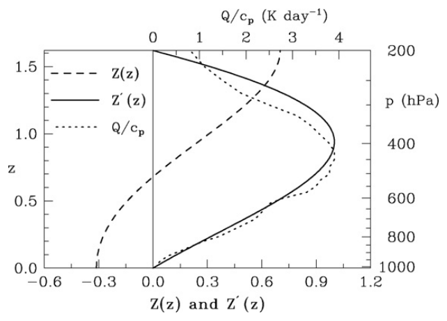
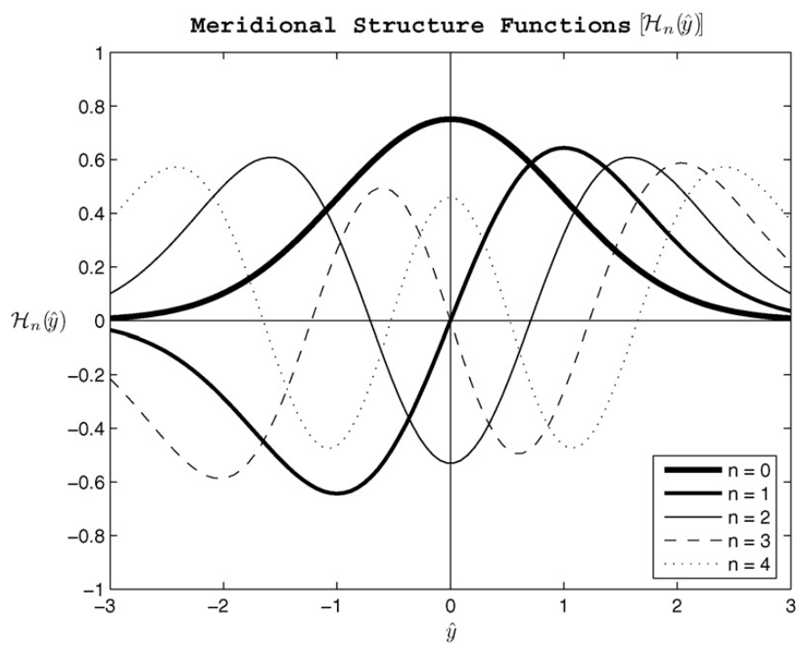
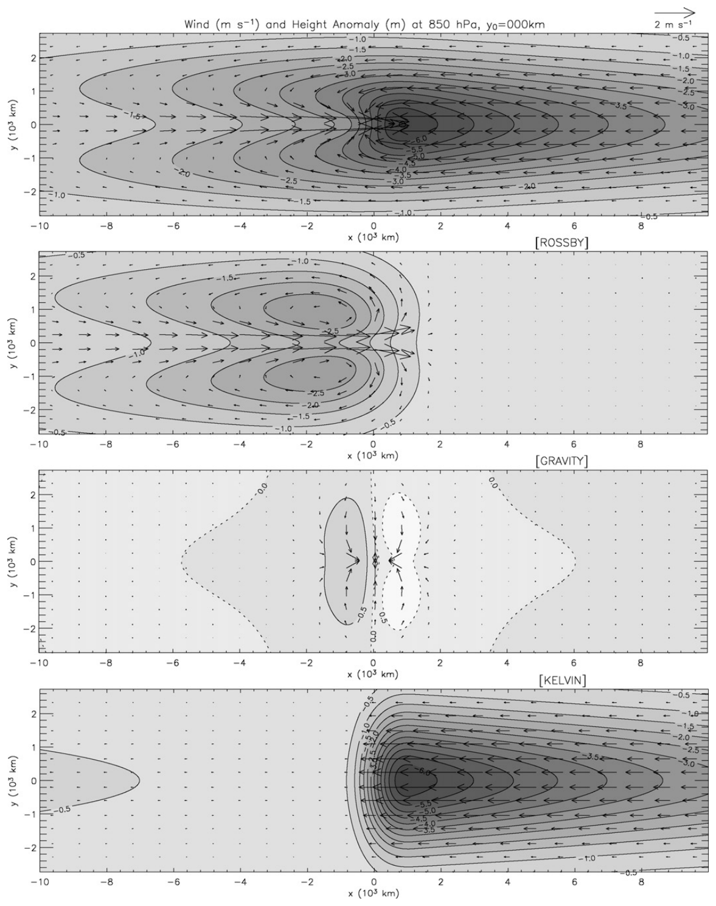
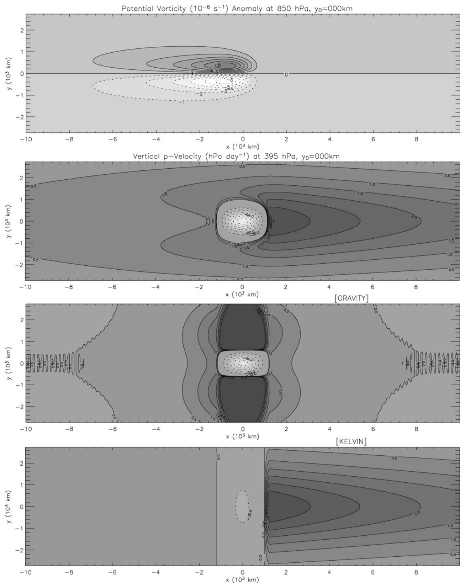
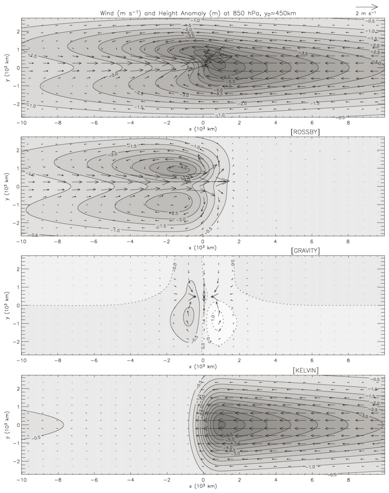
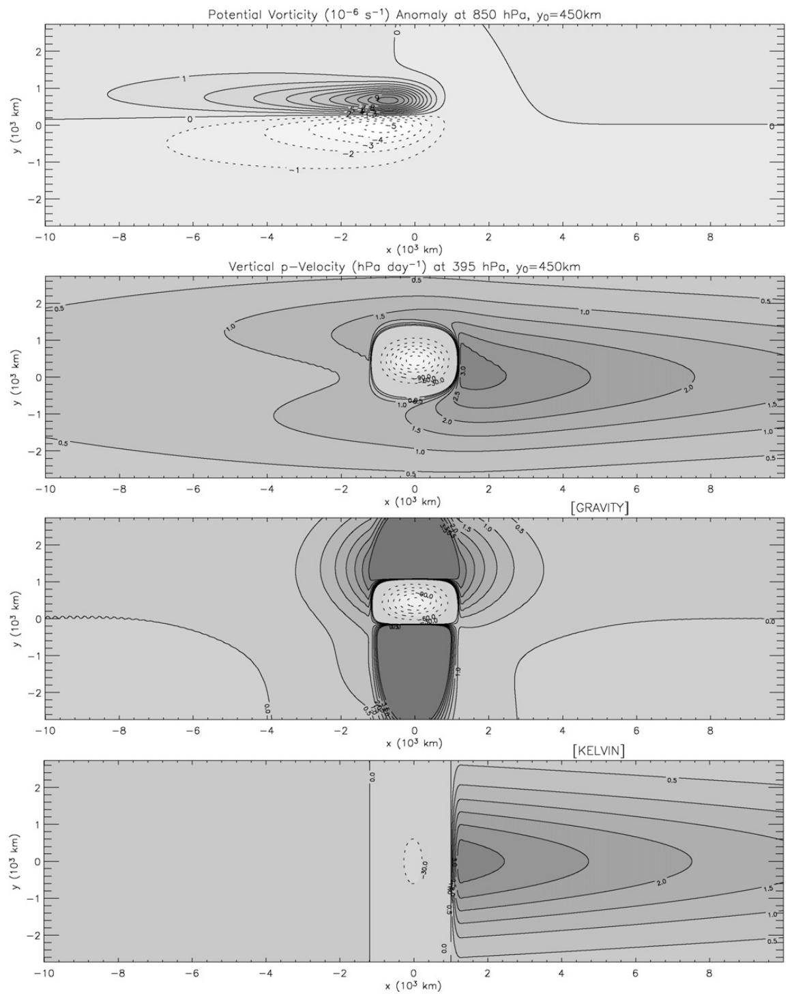
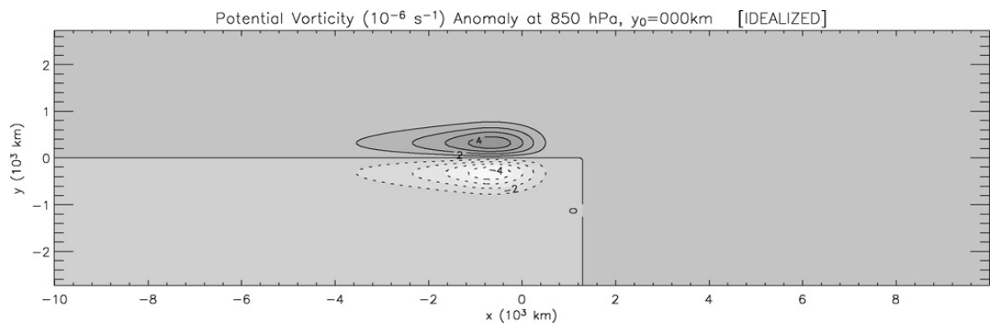
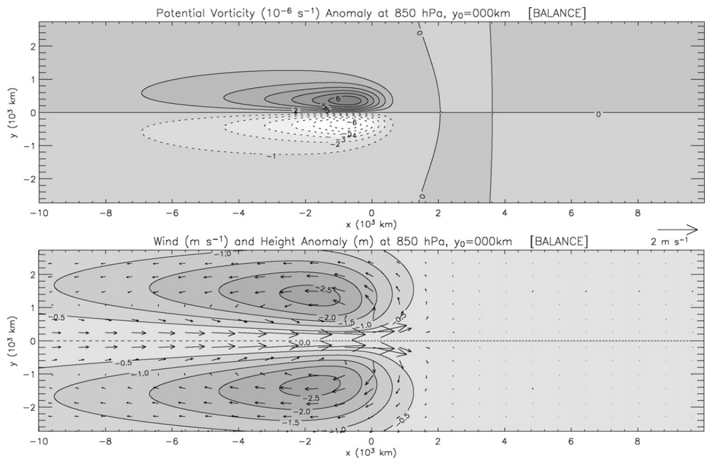
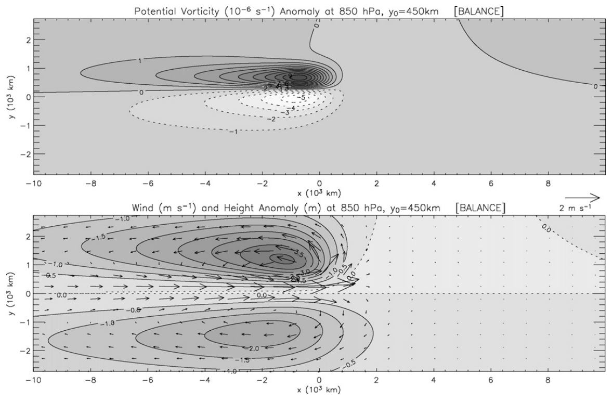
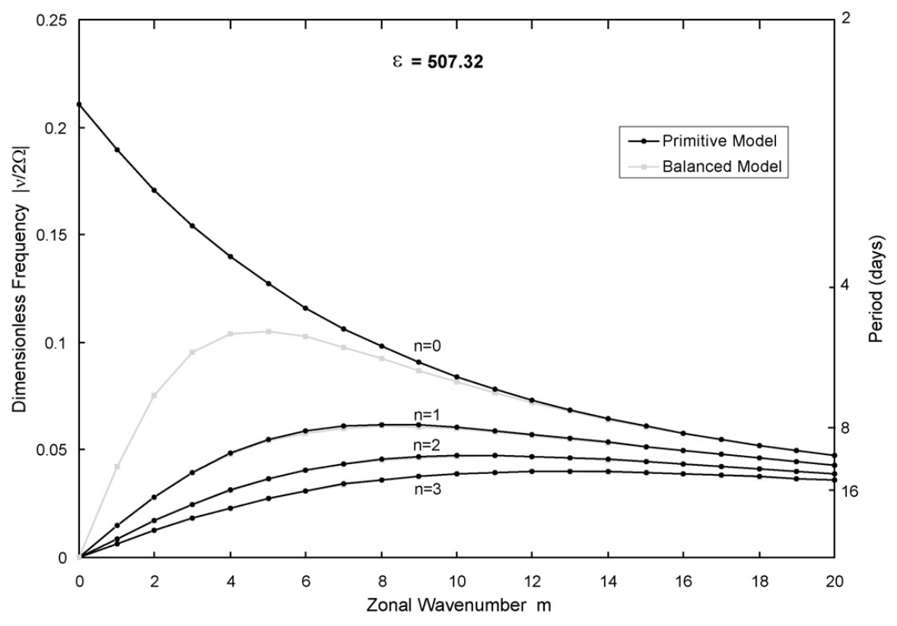

Potential Vorticity Aspects of the MJO (2006)#
Wayne H. Schubert, Matthew T. Masarik
Department of Atmospheric Science, Colorado State University, Fort Collins, CO 80523, USA
Dynamics of Atmospheres and Oceans, 42 (2006) 127–151. https://doi.org/10.1016/j.dynatmoce.2006.02.003
論文#
Abstract#
Considering linearized motion about a resting basic state, we derive analytical solutions of the equatorial \(\beta\)-plane primitive equations under the assumption that the flow is steady in a reference frame moving eastward with a diabatic forcing resembling a Madden–Julian Oscillation (MJO) convective envelope. The solutions are analyzed in terms of potential vorticity (PV) dynamics. Because the diabatic source term for PV contains a factor \(\beta y\), the diabatic heat source is ineffective at generating a PV anomaly at the equator but maximizes the PV response near the poleward edges of the heat source. In this way a moving heat source can produce two ribbons of lower tropospheric PV anomaly, a positive one off the equator in the northern hemisphere and a negative one off the equator in the southern hemisphere, with oppositely signed PV anomalies in the upper troposphere. Associated with these PV anomalies are geopotential anomalies that are shifted several hundred kilometers poleward. In the lower troposphere these zonally elongated geopotential anomalies resemble ITCZ trough zones, which demonstrates the close connection between the MJO wake dynamics and the formation of double ITCZs.
To demonstrate that the MJO wake response can be described by simple PV dynamics, we propose an invertibility principle relating the PV to the streamfunction, which in turn is locally related to the geopotential. This equatorial invertibility principle accurately recovers the balanced wind and mass fields found in the MJO wake in the primitive equation model. However, while the invertibility principle highlights the ability of simple PV dynamics to accurately describe the flow in the wake of an MJO convective envelope, it also clearly illustrates the inability of such dynamics to describe the Kelvin-like flow pattern ahead of the convection.
Keywords: Madden–Julian oscillation; Equatorial waves; Intraseasonal oscillation
本文考慮靜止基本態上的線性化運動，在「解在一個隨東傳非絕熱加熱源移動的參考座標系中呈定常（steady）」這個假設下，推導赤道 \(\beta\) 平面原始方程（equatorial \(\beta\)-plane primitive equations）的解析解；該加熱源的形狀模擬 MJO 的對流包絡（convective envelope）。所得的解再以位渦（potential vorticity, PV）動力學的角度來剖析。
關鍵在於：PV 方程的非絕熱源項帶有一個 \(\beta y\) 因子，因此加熱在赤道上（\(y = 0\)）完全無法製造 PV 距平，而是在熱源的南北兩側邊緣把 PV 響應推到最大。於是一個東移的赤道熱源會在對流層低層留下兩條 PV 距平帶（two ribbons）：北半球離赤道一段距離處為正 PV、南半球對應位置為負 PV；對流層高層則是正負號完全相反的一組 PV 距平。伴隨這些 PV 距平的位勢（geopotential）距平，其中心又比 PV 中心再往極方向（poleward）偏移數百公里。在對流層低層，這些沿緯向被拉長的位勢距平看起來就像 ITCZ 的槽區（trough zones）——這正說明了 MJO 尾流動力與雙 ITCZ（double ITCZ）形成之間的緊密關聯。
為了證明「MJO 尾流的響應可以用簡單的 PV 動力學描述」，作者進一步提出一個可逆性原理（invertibility principle），把 PV 與流函數 \(\psi\) 連起來，而 \(\psi\) 又與位勢 \(\phi\) 有一個局地（local）的關係。這個赤道版可逆性原理，能相當準確地重建原始方程模式在 MJO 尾流中所解出的平衡風場與質量場。不過，可逆性原理在凸顯「簡單 PV 動力學可以刻畫對流尾流」的同時，也明白顯示它無法描述對流前方那個類 Kelvin 波（Kelvin-like）的流場型態——因為 Kelvin 波的 PV 恰好為零。
1. Introduction#
The Madden–Julian oscillation (MJO) is a complex, multiscale phenomenon in which an envelope of convective clouds propagates eastward along the equator. Embedded within the convective envelope are interacting synoptic-scale, mesoscale, and cumulus-scale motions. The phenomenon is made even more complex by the fact that air–sea interactions and radiative processes are also playing important roles. In spite of this complexity, significant observational and theoretical understanding has been acquired. A review of the first two decades of research on the observational aspects of the MJO was given by [Madden and Julian, \(1994\)]. In the last decade the pace of observational research has not slackened, and many interesting new results have appeared, e.g., descriptions of the complete life cycle of the MJO [Hendon and Salby, \(1994\)], organization of convection within the MJO [Hendon and Liebmann, \(1994\)], the detailed study of individual cases observed during TOGA COARE [Lin and Johnson, \(1996\)a,b; Johnson and Ciesielski, \(2000\); Yanai et al., \(2000\)], a discussion of the role of extratropical forcing [Straub and Kiladis, \(2003\)a], interactions between the MJO and higher-frequency tropical wave activity [Straub and Kiladis, \(2003\)b], and the zonal and vertical structure from the surface to the lower stratosphere [Kiladis et al., \(2005\)]. On the theoretical and modeling side, a vast literature exists, including studies on the response of the tropical atmosphere to specified forcing (e.g., [Gill, \(1980\)]; [Chao, \(1987\)]), on stability analyses using wave-CISK arguments (e.g., [Chang and Lim, \(1988\)]), on air–sea interaction (e.g., [Emanuel, \(1987\)]; [Neelin et al., \(1987\)]; [Flatau et al., \(1997\)]), and on cloud-radiation feedback ([Hu and Randall, \(1994\), \(1995\)]; [Raymond, \(2001\)]). More recent work ([Majda and Biello, \(2004\)a]; [Biello and Majda, \(2005\)]) has led to a better theoretical understanding of the multiscale aspects of the problem. Since it is impossible to adequately summarize the existing MJO literature in a brief introduction such as this, review articles are of great value, and fortunately several have recently appeared. Thus, for historical perspectives and critical analyses of the MJO literature the reader is referred to the recent review papers by [Madden and Julian, \(2005\)], [Hendon, \(2005\)], [Wang, \(2005\)], [Slingo et al., \(2005\)] and [Zhang, \(2005\)].
The goal of the present paper is to isolate an aspect of the MJO problem that has not been sufficiently explored—the extent to which the flow in the wake of the convective envelope can be interpreted as balanced and derivable from the potential vorticity field. The motivation for this approach is as follows. Balanced theories, such as quasi-geostrophic theory and semi-geostrophic theory, provide a foundation for understanding the dynamics of midlatitude weather systems. These theories are more tractable than the primitive equations and can be succinctly expressed as two equations—a prognostic equation for the material conservation of potential vorticity, and a diagnostic equation (or invertibility principle) relating the potential vorticity to the streamfunction. In many tropical weather systems, such as the ITCZ and tropical cyclones, the release of latent heat plays a crucial role, so that potential vorticity is not materially conserved. However, even in these cases, a useful strategy is to formulate a balanced model that predicts the potential vorticity and then inverts it to find the associated balanced wind and mass fields. This approach has yielded insights into the dynamics of ITCZ breakdown and the formation of easterly waves (e.g., [Schubert et al., \(1991\)]) and into the extreme PV structures that evolve in tropical cyclones (e.g., [Hausman et al., \(2006\)]). What about large-scale weather systems that occur on the equator, such as the MJO? Are the concepts of balance and invertibility useful in understanding the essential dynamics of the MJO? Here we attempt to answer this question in the simplest context, i.e., in the context of a linearized equatorial \(\beta\)-plane model. The governing primitive equations are outlined in Section 2 and the separation of the vertical structure in Section 3. In Section 4 we present the complete solution of the horizontal structure problem, including all wave components. Section 5 identifies the convective forcing parameters that are crucial in determining the structure of the PV wake. Section 6 presents an equatorial invertibility principle from which (knowing the PV field) the wake flow can be fairly accurately recovered.
現象定位 —— MJO 是什麼
MJO（Madden–Julian oscillation）是一個複雜的多尺度（multiscale）現象：一個對流雲的「包絡」沿赤道向東傳播。
包絡內部藏著彼此交互作用的綜觀尺度、中尺度、積雲尺度運動；再加上海氣交互作用與輻射過程也扮演要角，使問題更為複雜。
觀測面的文獻脈絡
Madden and Julian (1994)
回顧範圍 (Scope)： 整理了 MJO 觀測研究頭二十年的成果。
Hendon and Salby (1994)
研究發現 (Finding)： 描繪出 MJO 完整的生命史（life cycle）。
Hendon and Liebmann (1994)
研究發現 (Finding)： 刻畫 MJO 包絡內部對流的組織方式。
Lin and Johnson (1996a,b)、Johnson and Ciesielski (2000)、Yanai et al. (2000)
研究方法 (Approach)： 針對 TOGA COARE 期間觀測到的個案做細部分析。
對本研究的用處： 本文第 3 節所用的加熱垂直剖面 \(Q/c_p\)，正是取自 Johnson and Ciesielski (2000) 的西太平洋暖池觀測。
Straub and Kiladis (2003a)
研究發現 (Finding)： 討論**中緯度強迫（extratropical forcing）**在 MJO 中的角色。
Straub and Kiladis (2003b)
研究發現 (Finding)： MJO 與更高頻的熱帶波動之間的交互作用。
Kiladis et al. (2005)
研究發現 (Finding)： 給出 MJO 從地表到低平流層的緯向與垂直結構。
對本研究的用處： 本文第 4 節把模式解出的低層東西風不對稱性，直接拿來與這篇的 MJO 合成場比對。
理論與模式面的文獻脈絡
Gill (1980)、Chao (1987)
研究方法 (Approach)： 探討熱帶大氣對「給定強迫」的響應（specified forcing）。
理論機制 (Theoretical Mechanism)： 本文可視為 Chao (1987) 那個「長波近似下、第一斜壓模態對移動行星尺度熱源響應」的最簡 MJO 模式之原始方程推廣版。
Chang and Lim (1988)
研究方法 (Approach)： 用 wave-CISK 論證做穩定度分析。
Emanuel (1987)、Neelin et al. (1987)、Flatau et al. (1997)
理論機制 (Theoretical Mechanism)： 強調海氣交互作用。
Hu and Randall (1994, 1995)、Raymond (2001)
理論機制 (Theoretical Mechanism)： 強調雲–輻射回饋（cloud-radiation feedback）。
Majda and Biello (2004a)、Biello and Majda (2005)
研究發現 (Finding)： 讓 MJO 多尺度面向的理論理解更上一層。
回顧性文獻：Madden and Julian (2005)、Hendon (2005)、Wang (2005)、Slingo et al. (2005)、Zhang (2005)
研究限制 (Limitation)： 作者坦言 MJO 文獻量大到「一段引言根本摘要不完」，因此把歷史脈絡與批判性分析都交給這幾篇回顧文章。
平衡理論這條線（本研究真正的出發點）
準地轉 / 半地轉理論（quasi-geostrophic / semi-geostrophic）
理論機制 (Theoretical Mechanism)： 中緯度天氣系統的理解基礎；比原始方程好處理，且可濃縮成兩條式子——PV 的預報方程（物質守恆）＋ 把 PV 連到流函數 \(\psi\) 的診斷方程（可逆性原理）。
研究限制 (Limitation)： 在 ITCZ、颱風這類潛熱釋放主導的熱帶系統中，PV 不再物質守恆，這條路看似走不通。
Schubert et al. (1991)
研究方法 (Approach)： 即使 PV 不守恆，仍可建一個「先預報 PV、再反演出平衡風場與質量場」的平衡模式。
研究發現 (Finding)： 由此獲得 ITCZ 崩解（ITCZ breakdown）與東風波生成的動力洞見。
Hausman et al. (2006)
研究發現 (Finding)： 同一策略用在颱風演化出的極端 PV 結構上。
本研究 —— Schubert and Masarik (2006)
研究問題 (Research Question)： 那麼發生在赤道上的大尺度天氣系統（例如 MJO）呢？「平衡（balance）」與「可逆性（invertibility）」這兩個概念，對理解 MJO 的核心動力還管用嗎？
研究方法 (Approach)： 在最簡單的脈絡下回答——線性化的赤道 \(\beta\) 平面模式。
鎖定的切入點 (Niche)： 專攻一個長期未被充分探討的面向——對流包絡「尾流（wake）」中的流場，究竟能在多大程度上被視為平衡流、並由 PV 場反演出來。
論文安排 (Roadmap)：
第 2 節：原始方程組。
第 3 節：垂直結構的分離。
第 4 節：水平結構問題的完整解（含所有波動成分）。
第 5 節：找出決定 PV 尾流結構的關鍵對流強迫參數。
第 6 節：提出赤道可逆性原理，示範「知道 PV 就能相當準確地還原尾流」。
2. Governing equations#
Consider small amplitude motions about a resting basic state in a stratified, compressible, quasi-static atmosphere on the equatorial \(\beta\)-plane. Using \(z = \ln(p_0/p)\) (where \(p_0 = 1010\text{ mb}\) is a constant “surface” pressure) as the vertical coordinate, we can write the linearized governing equations as
where \(u\) is the eastward component of velocity, \(v\) the northward component, \(w = Dz/Dt\) the “vertical log-pressure velocity”, \(\phi\) the perturbation geopotential, \(T\) the perturbation temperature, \(\beta = 2\Omega/a\) the equatorial value of the northward gradient of the Coriolis parameter, \(\Omega\) the Earth’s rotation rate, \(a\) the Earth’s radius, \(\alpha\) the constant coefficient for Rayleigh friction and Newtonian cooling, \(\Gamma = d\bar{T}/dz + \kappa\bar{T}\) (\(\kappa = R/c_p\)) the basic state static stability computed from the basic state temperature profile \(\bar{T}(z)\), and \(Q(x, y, z, t)\) the diabatic source term. For simplicity we assume that \(\Gamma\) is a constant, and choose the tropical tropospheric mean value \(\Gamma = 23.79\text{ K}\). We seek solutions of \((2.1)\) on a domain that is infinite in \(y\), periodic over \(-\pi a \le x \le \pi a\), and confined between \(z = 0\) and \(z = z_T = \ln(1010/200) \approx 1.619\), with the boundary conditions \(w = 0\) at \(z = 0, z_T\).
The total energy principle for the system \((2.1)\) is
where the total energy \(\mathcal{E}\) and the generation term \(\mathcal{G}\) are defined by
In the following analysis we shall assume that the flow is steady in a reference frame moving with the heat source \(Q\). Under this assumption the total energy principle \((2.2)\) becomes \(2\alpha\mathcal{E} = \mathcal{G}\), i.e., there is a balance between the total energy dissipation \(2\alpha\mathcal{E}\) and the diabatic generation \(\mathcal{G}\). In the examples we explore here, the energy generation is due to a non-zero \(Q\) in a localized, eastward moving region near the equator, while the dissipation occurs in the much broader area into which the energy has propagated via equatorial wave motions.
To derive the potential vorticity principle associated with \((2.1)\) we first cross-differentiate the horizontal momentum equations to obtain the vorticity equation
and then combine the hydrostatic, continuity, and thermodynamic equations in such a way as to eliminate \(T\) and \(w\), which results in
Then, eliminating the horizontal divergence between \((2.4)\) and \((2.5)\), we obtain
where
is the potential vorticity anomaly. We shall concentrate on interpreting the flow patterns associated with a moving heat source in terms of a PV wake. For this interpretation the \(y\)-factor in the last term of \((2.6)\) plays a crucial role. It causes the source term \(Q\) to be ineffective at generating a PV anomaly at the equator but maximizes the PV response near the poleward edges of the heat source. In this manner a moving equatorial heat source can produce two ribbons of lower tropospheric PV anomaly, a positive one off the equator in the northern hemisphere and a negative one off the equator in the southern hemisphere, with oppositely signed PV anomalies in the upper troposphere.
本節在赤道 \(\beta\) 平面上，考慮一個層結、可壓縮、準靜力（quasi-static）大氣中，繞著靜止基本態的小振幅擾動。垂直座標取的是對數氣壓座標 \(z = \ln(p_0/p)\)，其中 \(p_0 = 1010\text{ mb}\) 是固定的「地面」氣壓。式 \((2.1)\) 即為線性化後的控制方程組：兩條水平動量方程、靜力方程、連續方程、熱力學方程。
各符號的意義是：\(u\) 為東向風速、\(v\) 為北向風速、\(w = Dz/Dt\) 是「對數氣壓垂直速度」、\(\phi\) 為擾動位勢、\(T\) 為擾動溫度、\(\beta = 2\Omega/a\) 是科氏參數北向梯度在赤道的值、\(\Omega\) 為地球自轉角速度、\(a\) 為地球半徑、\(\alpha\) 是瑞利摩擦（Rayleigh friction）與牛頓冷卻（Newtonian cooling）共用的常數阻尼係數、\(\Gamma = d\bar{T}/dz + \kappa\bar{T}\)（\(\kappa = R/c_p\)）是由基本態溫度剖面 \(\bar{T}(z)\) 算出的靜力穩定度、\(Q(x,y,z,t)\) 則是非絕熱源項。
作者為了簡化，把 \(\Gamma\) 視為常數，取熱帶對流層平均值 \(\Gamma = 23.79\text{ K}\)。求解區域在 \(y\) 方向是無限的、在 \(x\) 方向以 \(-\pi a \le x \le \pi a\) 週期化（即繞地球一圈），垂直方向侷限在 \(z = 0\) 到 \(z = z_T = \ln(1010/200) \approx 1.619\) 之間（約當 \(200\text{ hPa}\)），上下邊界條件為 \(w = 0\)。
能量約束：式 \((2.2)\)–\((2.3)\) 給出總能量原理。這裡有一個關鍵的觀念操作——一旦假設「解在隨熱源移動的座標系中是定常的」，\((2.2)\) 就退化成 \(2\alpha\mathcal{E} = \mathcal{G}\)，也就是總能量耗散恰好與非絕熱生成達成平衡。在本文的設定中，能量的「生成」集中在赤道附近一塊侷限、東移的非零 \(Q\) 區域，而「耗散」則分散在能量藉赤道波動傳播過去、廣大得多的區域。
PV 原理的推導：先把兩條水平動量方程交叉微分，得到渦度方程 \((2.4)\)；再把靜力、連續、熱力學三式組合起來消掉 \(T\) 與 \(w\)，得到 \((2.5)\)；最後在 \((2.4)\) 與 \((2.5)\) 之間消去水平輻散，就得到 PV 距平 \(q\) 的守恆型方程 \((2.6)\)，其中 \(q\) 的定義是 \((2.7)\)。
本文最核心的一句話就藏在 \((2.6)\) 的最後一項：源項前面帶著一個 \(\beta y\) 的因子（相對於 \(y\) 是奇函數）。這代表：
在赤道上（\(y = 0\)）加熱完全無法生成 PV 距平——不管 \(Q\) 多大都一樣；
PV 響應反而在熱源的南北兩側邊緣達到最大。
於是一個東移的赤道熱源，會在對流層低層拉出兩條 PV 距平帶：北半球離赤道處為正 PV、南半球對應處為負 PV；而在對流層高層，由於垂直結構函數 \(Z(z)\) 變號，PV 距平的正負號整個相反。
3. Separation of the vertical and horizontal structure#
Our first step in the solution of \((2.1)\) is to separate off the vertical structure, under the assumption that the diabatic forcing excites only the first vertical internal mode. Thus, it is convenient to introduce a vertical structure function \(Z(z)\) that satisfies the second order equation
The solution satisfying the boundary conditions \(Z'(0) = Z'(z_T) = 0\) can be written in the normalized form
while its derivative takes the form
where \(z_m\), the level at which \(Z'(z)\) reaches its maximum value, is given by \(\pi z_m/z_T = \pi + \tan^{-1}(-2\pi/z_T)\), which, for \(z_T \approx 1.619\), turns out to be \(z_m \approx 0.5803 z_T\). For later convenience, the normalization chosen in \((3.2)\) and \((3.3)\) yields \(Z'(z_m) = 1\). The functions \(Z(z)\) and \(Z'(z)\) are shown in Fig. 1. Also shown in Fig. 1 is the 120-day mean (November 1992–February 1993) vertical profile of the heating rate for the western Pacific warm pool [Johnson and Ciesielski, \(2000\)]. The observed mean profile of \(Q/c_p\) has a peak value of approximately \(4\text{ K day}^{-1}\), and its shape is closely approximated by \(Z'(z)\), which is the justification for considering only the first vertical internal mode in the following analysis. Over the 120-day observational period there were two MJO passages [Lin and Johnson, \(1996\)b; Yanai et al., \(2000\)]. During these two periods of enhanced convection the shape of the vertical profile of \(Q/c_p\) was very similar to the shape of the time mean profile shown in Fig. 1, but the peak values were considerably larger, \(10\text{ K day}^{-1}\) for the first MJO and \(16\text{ K day}^{-1}\) for the second. Thus, for the vertical profile of heating at the time of peak convective activity during the passage of an MJO, our model uses the \(Z'(z)\) profile shown in Fig. 1, but scaled so the peak value is \(12\text{ K day}^{-1}\) (see Table 1) rather than \(4\text{ K day}^{-1}\).

Fig. 1. The curves labeled \(Z(z)\) and \(Z'(z)\) (interpreted using the lower scale) are the vertical structure functions defined by \((3.2)\) and \((3.3)\). The curve labeled \(Q/c_p\) (interpreted using the upper scale) is the 120-day mean vertical profile of heating rate for the western Pacific warm pool, as determined by [Johnson and Ciesielski, \(2000\)].
Assuming that \(u, v, \phi, T, w, Q\) have the separable forms
we can convert \((2.1)\) into the following system for the horizontal structure functions \(\hat{u}, \hat{v}, \hat{\phi}, \hat{T}, \hat{w}\):
In the next section we present an analytical solution of \((3.5)\). The solution can be considered as the primitive equation generalization of the simplest MJO model involving the first baroclinic mode response to a moving planetary scale heat source under the long wave approximation [Chao, \(1987\)].
Table 1. Constants
符號 |
值 |
符號 |
值 |
符號 |
值 |
|---|---|---|---|---|---|
\(c_p\) |
\(1004\ \text{J kg}^{-1}\text{K}^{-1}\) |
\(\beta\) |
\(2\Omega/a\) |
\(\bar{c}\) |
\(41.25\ \text{m s}^{-1}\) |
\(R\) |
\(287\ \text{J kg}^{-1}\text{K}^{-1}\) |
\(p_0\) |
\(1010\ \text{mb}\) |
\(\epsilon\) |
\(507.3\) |
\(\Omega\) |
\(7.292\times10^{-5}\ \text{s}^{-1}\) |
\(z_T\) |
\(1.619\) |
\(a_0\) |
\(1250\ \text{km}\) |
\(a\) |
\(6370\ \text{km}\) |
\(\Gamma\) |
\(23.79\ \text{K}\) |
\(b_0\) |
\(450\ \text{km}\) |
\(y_0\) |
\(0\) 或 \(450\ \text{km}\) |
\(Q_0/c_p\) |
\(12\ \text{K day}^{-1}\) |
\(c\) |
\(5\ \text{m s}^{-1}\) |
\(\alpha\) |
\((4\ \text{days})^{-1}\) |
求解 \((2.1)\) 的第一步是把垂直結構分離出來，其背後的假設是：非絕熱強迫只激發第一垂直內模態（first vertical internal mode）。作者為此引入滿足二階方程 \((3.1)\) 的垂直結構函數 \(Z(z)\)，在上下邊界條件 \(Z'(0) = Z'(z_T) = 0\) 之下解得歸一化形式 \((3.2)\)，其導數則為 \((3.3)\)。
其中 \(z_m\) 是 \(Z'(z)\) 取極大值的高度，由 \(\pi z_m/z_T = \pi + \tan^{-1}(-2\pi/z_T)\) 決定；當 \(z_T \approx 1.619\) 時 \(z_m \approx 0.5803\, z_T\)。\((3.2)\)、\((3.3)\) 的歸一化方式刻意選成讓 \(Z'(z_m) = 1\)，方便後續運算。
為什麼「只留第一模態」是合理的？ 這是本節的關鍵論證，證據就在圖 1：作者把 Johnson and Ciesielski (2000) 針對西太平洋暖池所算出的 120 天平均（1992 年 11 月–1993 年 2 月）加熱率垂直剖面 \(Q/c_p\) 疊上去，發現觀測剖面的形狀與 \(Z'(z)\) 幾乎重合——這就是「後續分析只考慮第一垂直內模態」的正當性來源。
數值的挑選：觀測平均剖面的峰值約 \(4\text{ K day}^{-1}\)；但在這 120 天內有兩次 MJO 通過，兩次增強對流期間 \(Q/c_p\) 的形狀與時間平均剖面非常相似，峰值卻大得多——第一次 MJO 約 \(10\text{ K day}^{-1}\)、第二次約 \(16\text{ K day}^{-1}\)。因此，為了代表「MJO 通過時對流最旺盛的時刻」，模式採用圖 1 的 \(Z'(z)\) 形狀，但把峰值調成 \(12\text{ K day}^{-1}\)（見 Table 1），而非 \(4\text{ K day}^{-1}\)。
分離變數的技術細節（式 \((3.4)\)）：值得注意的是兩組變數用的垂直結構函數不同——\(u\)、\(v\)、\(\phi\) 用 \(Z(z)\)，而 \(T\)、\(w\)、\(Q\) 用 \(Z'(z)\)。這是由靜力方程 \(\partial\phi/\partial z = RT\) 與連續方程共同決定的自然配對。代回 \((2.1)\) 後，就把三維問題壓成只含 \(\hat{u}, \hat{v}, \hat{\phi}, \hat{T}, \hat{w}\) 的二維水平結構方程組 \((3.5)\)——形式上就是一組淺水方程（shallow water system）。
最後作者點明本文的定位：\((3.5)\) 的解析解，可視為 Chao (1987) 那個「長波近似下、第一斜壓模態對移動行星尺度熱源之響應」的最簡 MJO 模式的原始方程推廣版。
4. Solution of the horizontal structure equations#
We assume that the diabatic forcing is due to an eastward propagating region of deep convection. The exact form of the forcing is
where \(\xi = x - ct\), \(c\) is the propagation speed of the cloud cluster, \(y_0\) its center, \(a_0\) its half-width in \(x\), \(b_0\) its \(e\)-folding width in \(y\), and \(Q_0\) its peak value. The values chosen for these parameters are listed in Table 1. It is interesting to note that the area integral of \((4.1)\) yields \(\iint \hat{Q}(\xi, y)\,dx\,dy = \pi^{1/2}Q_0 a_0 b_0\), so that our variation of the parameter \(y_0\) has no effect on the total diabatic heating rate, \(\pi^{1/2}Q_0 a_0 b_0\).
Assuming the solutions are steady in a reference frame translating eastward with speed \(c\), we can simplify \((3.5)\) through the replacements \(\partial/\partial t \to -c(\partial/\partial\xi)\) and \(\partial/\partial x \to \partial/\partial\xi\). We then take the Fourier \(\xi\)-transform of the resulting system, defining, for example,
where the integer \(m\) denotes the zonal wavenumber. Similar Fourier transform pairs exist for \(\hat{v}_m(y)\), \(\hat{\phi}_m(y)\), \(\hat{T}_m(y)\), \(\hat{w}_m(y)\), and \(\hat{Q}_m(y)\). In this way, the system \((3.5)\) reduces to
where \(\bar{c}^{2} = R\Gamma[(\pi/z_T)^{2} + (1/4)]^{-1} \approx (41.25\text{ m s}^{-1})^{2}\). Once this “shallow water system” has been solved for \(\hat{u}_m\), \(\hat{v}_m\), \(\hat{\phi}_m\), the vertical velocity \(\hat{w}_m\) can be recovered from
The Fourier \(\xi\)-transform of \(\hat{Q}(\xi, y)\), defined by \((4.1)\), is given by \(\hat{Q}_m(y) = (2\pi a)^{-1}\int_{-\pi a}^{\pi a}\hat{Q}(\xi, y)\exp(-im\xi/a)\,d\xi\), which is easily evaluated to yield
We now write the system \((4.3)\) in the convenient vector form
註 1（原文腳註）：\((4.6)\) 第一項之所以這麼簡潔，靠的是「瑞利摩擦與牛頓冷卻的阻尼率相等」這個假設。不過 \((4.6)\) 之後的推導很容易推廣到「\(10\)–\(20\) 天輻射阻尼率 ＋ \(3\)–\(5\) 天摩擦阻尼率」的情形 [Lin et al., \(2005\)]。
本節假設非絕熱強迫來自一塊向東傳播的深對流區，其精確形式即 \((4.1)\)：緯向是一個半寬 \(a_0\) 的升餘弦「帽子」、經向是一個 \(e\)-folding 寬度為 \(b_0\) 的高斯，中心位在 \(y = y_0\)，峰值為 \(Q_0\)，並以速度 \(c\) 東移（\(\xi = x - ct\) 為隨波座標）。
這裡有一個很漂亮的設計：\((4.1)\) 的面積分是 \(\pi^{1/2}Q_0 a_0 b_0\)，完全與 \(y_0\) 無關。這代表後面比較「\(y_0 = 0\)」與「\(y_0 = 450\text{ km}\)」兩組實驗時，兩者的總加熱率一模一樣——差別純粹來自「加熱擺在哪」，而不是「加熱多少」，這讓對照組乾淨得多。
求解策略的三段式化簡：
假設定常：在以速度 \(c\) 東移的參考系中解是定常的 → \(\partial/\partial t \to -c\,\partial/\partial\xi\)，時間維度消失。
緯向傅立葉轉換：把 \(\xi\) 展開成緯向波數 \(m\) 的級數（式 \((4.2)\)），\((3.5)\) 就化成每個 \(m\) 各自獨立的常微分方程組 \((4.3)\)——形式上就是一組淺水系統。其中 \(\bar{c}^{2} = R\Gamma[(\pi/z_T)^{2} + 1/4]^{-1}\)，代入數值得重力波相速 \(\bar{c} \approx 41.25\text{ m s}^{-1}\)（即第一斜壓模態的等效重力波速）。
解出 \(\hat{u}_m, \hat{v}_m, \hat{\phi}_m\) 之後，垂直速度 \(\hat{w}_m\) 由 \((4.4)\) 的診斷關係直接還原。
加熱項本身的緯向傅立葉係數 \((4.5)\) 有一個 \(\sin(ma_0/a)/m\) 的因子——這就是「有限寬度帽子」在波數空間的特徵：\(a_0\) 決定了哪些緯向波數被有效激發。
最後把 \((4.3)\) 寫成向量形式 \((4.6)\)，為下一步的**正規模態轉換（normal mode transform）**鋪路。
（承 §4）正規模態轉換與赤道波本徵函數#
where
The Fourier transformed Eq. \((4.6)\) can be solved using a normal mode transform in the meridional direction. To accomplish this, first define the inner product
where \(\mathbf{f}(\hat{y})\) and \(\mathbf{g}(\hat{y})\) are complex, three component vector functions of the dimensionless meridional coordinate \(\hat{y} = (\beta/\bar{c})^{1/2}y = \epsilon^{1/4}(y/a)\), and where the ‘\(*\)’ symbol denotes the complex conjugate and \(\epsilon = 4\Omega^{2}a^{2}/\bar{c}^{2}\) is Lamb’s parameter. With \(\bar{c} = 41.25\text{ m s}^{-1}\) we obtain \(\epsilon = 507.3\). The inner product \((4.8)\) is suggested by the total energy principle associated with \((4.6)\). The adjoint of \(\mathcal{L}\), denoted by \(\mathcal{L}^{\dagger}\) and defined by \((\mathcal{L}\mathbf{f}, \mathbf{g}) = (\mathbf{f}, \mathcal{L}^{\dagger}\mathbf{g})\), is related to \(\mathcal{L}\) by \(\mathcal{L}^{\dagger} = -\mathcal{L}\). In other words, the linear operator \(\mathcal{L}\) is skew-Hermitian with respect to the inner product \((4.8)\). The skew-Hermitian property dictates that the eigenvalues of \(\mathcal{L}\) are pure imaginary and that the eigenfunctions form a complete [Wu and Moore, \(2004\)], orthogonal set (as long as degeneracy does not occur). Denoting an eigenvalue by \(i\nu_{mnr}\) and a corresponding eigenfunction by \(\mathbf{K}_{mnr}(\hat{y})\), we have
The eigenvalues of \(\mathcal{L}\), which yield the dispersion relation for equatorially trapped waves, satisfy the cubic equation [Matsuno, \(1966\)]
where \(n = 0, 1, 2, \ldots\) is the index for the meridional mode and \(\hat{\nu} = \nu/(2\Omega)\) is the dimensionless frequency. We let \(r = 0, 1, 2\) be the index corresponding to the three roots of the dispersion relation, so that the eigenfunctions and eigenvalues can be characterized by the triple index \(m, n, r\). Special care is required for the case \(n = 0\), for which \((4.10)\) can be factored into \((\epsilon^{1/2}\hat{\nu} + m)(\epsilon^{1/2}\hat{\nu}^{2} - m\hat{\nu} - 1) = 0\). The root \(\epsilon^{1/2}\hat{\nu} = -m\) must be discarded because the corresponding eigenfunction is unbounded in \(\hat{y}\). Thus, when \(n = 0\), only the two solutions of \(\epsilon^{1/2}\hat{\nu}^{2} - m\hat{\nu} - 1 = 0\) are retained and are indexed by \(r = 0\) (mixed Rossby-gravity wave) and \(r = 2\) (eastward inertia-gravity wave). The eigenfunctions for Kelvin waves can be found separately by setting \(V_{mnr}\) to zero in \((4.9)\). The Kelvin wave eigenvalues \(\epsilon^{1/2}\hat{\nu} = m\) can be formally considered as a solution to \((4.10)\) when \(n = -1\). We index this solution as \(r = 2\). Then, for given \(n = -1, 0, 1, \ldots\), \(\mathbf{K}_{mnr}(\hat{y})\) is the eigenfunction corresponding to the eigenvalue \(\nu_{mnr}\). The eigenfunctions \(\mathbf{K}_{mnr}(\hat{y})\) are given by
where the meridional structure functions \(\mathcal{H}_n(\hat{y})\) (\(n = 0, 1, 2, \ldots\)) are related to the Hermite polynomials \(H_n(\hat{y})\) (\(n = 0, 1, 2, \ldots\)) by
註 2（原文腳註）：對本文的用途而言，經向結構函數 \(\mathcal{H}_n\) 比拋物柱函數（parabolic cylinder functions）\(D_n\) 更方便。兩者的關係是 \(\mathcal{H}_n(\hat{y}) = (\pi^{1/2}n!)^{-(1/2)}D_n(2^{1/2}\hat{y})\)。
Since the Hermite polynomials satisfy the recurrence relation \(\hat{y}H_n(\hat{y}) = \frac{1}{2}H_{n+1}(\hat{y}) + nH_{n-1}(\hat{y})\) and the derivative relation \(dH_n(\hat{y})/d\hat{y} = 2nH_{n-1}(\hat{y})\), it is easily shown that the meridional structure functions \(\mathcal{H}_n(\hat{y})\) satisfy the recurrence relation
and the derivative relation
The first two meridional structure functions are \(\mathcal{H}_0(\hat{y}) = \pi^{-(1/4)}e^{-(1/2)\hat{y}^{2}}\) and \(\mathcal{H}_1(\hat{y}) = 2^{1/2}\pi^{-(1/4)}\hat{y}\, e^{-(1/2)\hat{y}^{2}}\), from which all succeeding structure functions can be computed using the recurrence relation \((4.13)\). Computing \(\mathcal{H}_n(\hat{y})\) via its recurrence relation is much preferable to computing \(H_n(\hat{y})\) via its recurrence relation and then computing \(\mathcal{H}_n(\hat{y})\) by evaluation of the right hand side of \((4.12)\), because the former method avoids explicit calculation of the factor \(2^{n}n!\) for large \(n\). Plots of \(\mathcal{H}_n(\hat{y})\) for \(n = 0, 1, 2, 3, 4\) are shown in Fig. 2. The normalization factor in \((4.11)\) is given by
for \(n \ge 0\) and by
for \(n = -1\). These normalization factors result in the orthonormality property
The normality part of \((4.17)\) is easily confirmed by substituting \((4.11)\) into the left hand side and then using
to evaluate the three resulting integrals.

Fig. 2. \(\mathcal{H}_n(\hat{y})\) for \(n = 0, 1, 2, 3, 4\).
這一段是全文數學機器的核心：把 \((4.6)\) 這個「對 \(y\) 的常微分方程組」轉成「一組純代數方程」。
第一步：定義一個「對的」內積。 \((4.7)\) 把 \((4.3)\) 的係數收進算符 \(\mathcal{L}\)。接著在無因次經向座標 \(\hat{y} = (\beta/\bar{c})^{1/2}y = \epsilon^{1/4}(y/a)\) 上定義內積 \((4.8)\)，其中 \(\epsilon = 4\Omega^{2}a^{2}/\bar{c}^{2}\) 是 Lamb 參數（Lamb’s parameter）；取 \(\bar{c} = 41.25\text{ m s}^{-1}\) 得 \(\epsilon = 507.3\)。
這個內積不是隨便挑的——它是由 \((4.6)\) 對應的總能量原理「暗示」出來的（注意第三項帶著 \(1/\bar{c}^{2}\)，正是位能項的權重）。挑對內積之後，關鍵性質就出現了：
也就是 \(\mathcal{L}\) 相對於這個內積是「反厄米（skew-Hermitian）」的。這一步帶來兩個立即的紅利：
本徵值必為純虛數 → 寫成 \(i\nu_{mnr}\)，\(\nu\) 是實頻率（無成長、無衰減，符合線性無耗散波動的物理）；
本徵函數構成完備、正交的集合（只要沒有簡併），於是可以用它們當展開基底。
第二步：解本徵問題，得到赤道波的頻散關係。 \((4.9)\) 的本徵值滿足 Matsuno (1966) 的三次方程 \((4.10)\)。因為是三次方程，每組 \((m, n)\) 對應三個根，用 \(r = 0, 1, 2\) 標記——這正對應到西傳羅斯貝波、西傳慣性重力波、東傳慣性重力波三類。
幾個必須小心處理的特例：
\(n = 0\)：\((4.10)\) 可因式分解成 \((\epsilon^{1/2}\hat{\nu} + m)(\epsilon^{1/2}\hat{\nu}^{2} - m\hat{\nu} - 1) = 0\)。根 \(\epsilon^{1/2}\hat{\nu} = -m\) 必須捨棄，因為它對應的本徵函數在 \(\hat{y} \to \pm\infty\) 時發散（不是赤道捕捉波）。剩下兩根即 \(r = 0\)（混合羅斯貝–重力波）與 \(r = 2\)（東傳慣性重力波）。
Kelvin 波：在 \((4.9)\) 中令 \(V_{mnr} = 0\) 單獨求得，其本徵值 \(\epsilon^{1/2}\hat{\nu} = m\) 可形式上視為 \((4.10)\) 在 \(n = -1\) 的解，索引為 \(r = 2\)。這就是為什麼後面所有級數的 \(n\) 都從 \(-1\) 開始數。
第三步：經向結構函數。 本徵函數 \((4.11)\) 全部由 \(\mathcal{H}_n(\hat{y})\) 組成，而 \(\mathcal{H}_n\) 就是 \((4.12)\) 定義的歸一化 Hermite 函數（Hermite 多項式乘上高斯包絡）。\((4.13)\)、\((4.14)\) 分別是它的遞迴關係與微分關係——注意 \(\mathcal{H}_n\) 的微分仍然只用到 \(\mathcal{H}_{n\pm1}\)，這正是後面所有推導能保持封閉的原因。
作者還給了一個很實用的數值建議：要算 \(\mathcal{H}_n\)，應該直接用 \((4.13)\) 對 \(\mathcal{H}_n\) 遞迴，而不要先算 \(H_n\) 再套 \((4.12)\)——因為後者會顯式碰到 \(2^{n}n!\)，\(n\) 一大就溢位。（本文實作要遞迴到 \(n = 200\)，這個細節是必要的。）
\((4.15)\)、\((4.16)\) 是歸一化常數 \(A_{mnr}\)，\((4.17)\) 則是由此得到的正交歸一性——這是把 \((4.6)\) 化成代數方程的最後一塊拼圖。
（承 §4）解的組裝、物理空間場的還原，與 Figs. 3–6#
It should be noted that there is a degeneracy for the zonally symmetric Rossby modes (i.e., for \(m = 0\), \(n > 0\), \(r = 0\)), in which case \((4.11)\) is indeterminant because both \(m\) and \(\hat{\nu}_{0n0}\) vanish. However, orthonormal eigenfunctions are easily constructed in this case, as discussed in Appendix A. Because of the orthonormality and completeness of the eigenfunctions \(\mathbf{K}_{mnr}(\hat{y})\), we can set up the transform pair [Silva Dias et al., \(1983\); DeMaria, \(1985\)]
where \(\hat{\eta}_{mnr}\) are the scalar coefficients in the normal mode expansion of the vector \(\hat{\boldsymbol{\eta}}_m(\hat{y})\). Note that \((4.19)\) can be obtained by taking the inner product of \((4.20)\) with \(\mathbf{K}_{mn'r'}(\hat{y})\) and using the orthonormality property \((4.17)\).
We now have the tools necessary to solve \((4.6)\). Taking the inner product of \((4.6)\) with the eigenfunction \(\mathbf{K}_{mnr}(\hat{y})\), and then using \((\mathcal{L}\hat{\boldsymbol{\eta}}_m, \mathbf{K}_{mnr}) = -(\hat{\boldsymbol{\eta}}_m, \mathcal{L}\mathbf{K}_{mnr}) = -(\hat{\boldsymbol{\eta}}_m, i\nu_{mnr}\mathbf{K}_{mnr}) = i\nu_{mnr}\hat{\eta}_{mnr}\), we can reduce our ordinary differential Eq. \((4.6)\) to the system of algebraic equations
where \(\hat{Q}_{mnr} = (\hat{\mathbf{Q}}_m, \mathbf{K}_{mnr})\). The inner product \((\hat{\mathbf{Q}}_m, \mathbf{K}_{mnr})\) is derived using the integral given in Appendix B. Using the result \((B.1)\) twice, once with \(n\) replaced by \(n + 1\) and once with \(n\) replaced by \(n - 1\), we can write \(\hat{Q}_{mnr}\) as
for \(n \ge 0\), and as
for the Kelvin wave (\(n = -1\), \(r = 2\)). After \(\hat{\eta}_{mnr}\) is computed from \((4.21)\)–\((4.23)\), the physical space fields \(u, v, \phi\) can be recovered by making use of \((4.20)\), followed by the inverse Fourier transform in \(\xi\), i.e.,
In addition, the potential vorticity field can be recovered from
where
A simple confirmation of \((4.25)\) and \((4.26)\) is obtained by noting that \((4.9)\) implies that \(i\nu_{mnr}[i(m/a)V_{mnr} - dU_{mnr}/dy - (\beta/\bar{c}^{2})y\Phi_{mnr}] = \beta V_{mnr}\) and then using the second entry in \((4.11)\) for \(V_{mnr}\) on the right hand side. According to \((4.25)\) and \((4.26)\), the physical space potential vorticity field is a superposition of the potential vorticity associated with all wave types except for the Kelvin wave, which has zero potential vorticity since the \(m^{2} - \epsilon\hat{\nu}_{mnr}^{2}\) term in \((4.26)\) vanishes. Although equatorial \(\beta\)-plane dynamics differs from midlatitude \(f\)-plane dynamics in the sense that inertia-gravity waves have zero potential vorticity on the midlatitude \(f\)-plane but not on the equatorial \(\beta\)-plane, the contribution of the equatorial \(\beta\)-plane inertia-gravity waves to the potential vorticity tends to be quite small, especially for the higher zonal wavenumbers, because for inertia-gravity waves \(m^{2} - \epsilon\hat{\nu}_{mnr}^{2}\) decreases and \(|\hat{\nu}_{mnr}|\) increases as \(m\) increases.
Using \((4.4)\), \((4.11)\) and \((4.14)\) the physical space vertical log-pressure velocity can be recovered from
For later use we note that the vertical log-pressure velocity \(w = Dz/Dt\) is related to the vertical \(p\)-velocity \(\omega = Dp/Dt\) by \(\omega = -p_0 e^{-z}w\).
All the model results shown in this section have been constructed by numerical evaluation of \((4.24)\), \((4.25)\) and \((4.27)\), which involves a superposition of zonal wavenumbers (sum over \(m\)), meridional wavenumbers (sum over \(n\)), and wave types (sum over \(r\)). In our examples the spectral coefficients \(\hat{\eta}_{mnr}\) decay exponentially with \(n\) for all choices of \(m\), which enables us to truncate the spectral solution at \(n = N\) with a specified degree of accuracy. In general, \(N = 200\) gives accurate results.
Using the parameters listed in Table 1, the 850 hPa wind and geopotential fields computed from \((4.24)\) are shown in the top panel of Fig. 3 for \(y_0 = 0\) and in the top panel of Fig. 5 for \(y_0 = 450\text{ km}\). The choice of parameters describing the speed, size, and magnitude of the forcing was guided by the observational analyses of [Hendon and Salby, \(1994\)], [Lin and Johnson, \(1996\)b] and [Kiladis et al., \(2005\)]. The choice of 850 hPa as the display level is arbitrary. According to the profile of \(Z(z)\) shown in Fig. 1, upper tropospheric fields have the opposite sign and approximately twice the magnitude of the lower tropospheric fields. An interesting property of these simple linear solutions is that the lower tropospheric maximum westerly winds in the wake of the convective envelope are stronger than the lower tropospheric maximum easterly winds ahead of the convection. For example, in Fig. 3 the maximum 850 hPa westerly flow is \(3.7\text{ m s}^{-1}\) while the maximum easterly flow is \(1.6\text{ m s}^{-1}\). In Fig. 5 the corresponding values are \(4.2\text{ m s}^{-1}\) and \(1.4\text{ m s}^{-1}\). These wind speeds, the degree of asymmetry between westerlies and easterlies, and the larger zonal extent of the easterlies compared to the westerlies all agree well with the observed MJO composite presented by [Kiladis et al., \(2005\), their Fig. 3]. The remaining panels of Figs. 3 and 5 show the decomposition of the total fields into Rossby modes (\(r = 0\) with \(n \ge 1\)), inertia-gravity modes (\(r = 1, 2\) with \(n \ge 1\) and \(r = 2\) with \(n = 0\)), and Kelvin modes (\(r = 2\) with \(n = -1\)). We have not plotted the contribution from mixed Rossby-gravity modes (\(r = 0\) with \(n = 0\)) since it vanishes when \(y_0 = 0\) and is very small when \(y_0 = 450\text{ km}\).

Fig. 3. The upper panel shows the geopotential height anomaly and winds at 850 mb for \(y_0 = 0\) and for the remaining parameters listed in Table 1. The remaining three panels show respectively the contributions made by Rossby waves, inertia-gravity waves, and Kelvin waves.
The 850 hPa potential vorticity field computed from \((4.25)\) and the 395 hPa vertical motion field computed from \((4.27)\) are shown in the top two panels of Fig. 4 for \(y_0 = 0\) and in the top two panels of Fig. 6 for \(y_0 = 450\text{ km}\). The bottom two panels of Figs. 4 and 6 show the decomposition of the vertical motion field into inertia-gravity waves and Kelvin waves (contributions from other modes are small). We have not shown the decomposition of the PV field because it is essentially entirely due to Rossby waves.

Fig. 4. The upper panel shows the 850 hPa potential vorticity anomaly \(q\), with a contour interval of \(1\times10^{-6}\text{ s}^{-1}\). The second panel shows the vertical \(p\)-velocity, \(\omega\), at 395 hPa, with a contour interval of \(30\text{ hPa day}^{-1}\) in the region of rising motion (dashed contours), and a contour interval of \(0.5\text{ hPa day}^{-1}\) in the region of sinking motion (solid contours). The third and fourth panels show the respective contributions of inertia-gravity waves and Kelvin waves to the vertical motion field. Results in this figure are for \(y_0 = 0\).
Several notable features are apparent from Figs. 3–6. The total \(u, v, \phi\) fields are composed of Rossby waves on the west side of the source, Kelvin waves on the east side, with “slaved” inertia-gravity waves providing low-level convergence near the source. The PV anomaly patterns and the associated equatorial trough shear zones are zonally elongated because of the eastward movement of the convective envelope and the equatorward advection of the basic state PV in the wake of the convective envelope. As the center of the convective envelope is shifted off the equator there is very little change in the response east of the forcing. In contrast, the response west of the forcing becomes biased to the northern hemisphere. In particular, the PV anomaly is nearly twice as strong in the northern hemisphere when \(y_0 = 450\text{ km}\).

Fig. 5. Same as Fig. 3, but with the center of the convective forcing shifted north of the equator (\(y_0 = 450\text{ km}\)).

Fig. 6. Same as Fig. 4, but with the center of the convective forcing shifted north of the equator (\(y_0 = 450\text{ km}\)).
It is interesting to interpret Figs. 3–6 in terms of the ITCZ, a concept that can be associated with a variety of observing methods and hence a variety of meteorological fields, e.g., geopotential anomalies, vorticity, divergence, cloudiness, and rainfall. Since the lower tropospheric geopotential anomalies are negative and the balanced flow is cyclonic, the terms “equatorial trough zone” and “equatorial trough shear zone” are sometimes used. Our model does not explicitly describe cloud processes and boundary layer dynamics. However, it does produce equatorial trough zones and zonally elongated vorticity strips. We shall take the liberty of calling these “ITCZs”, under the assumption that, in a more complete model, low-level cyclonic vorticity would produce boundary layer convergence, Ekman pumping, cloudiness, and rain. According to this interpretation, a convective envelope centered on the equator produces a symmetric double ITCZ in its wake, while a convective envelope centered several hundred kilometers off the equator still produces a double ITCZ but with a bias toward the hemisphere to which the convection is shifted. In this way convection can be enhanced away from the equator in the MJO wake, even when the maximum sea surface temperature is at the equator. This is consistent with the observational study of [Liebmann et al., \(1994\)], who found that tropical depressions, tropical storms, and typhoons preferentially develop in the large-scale low level cyclonic vorticity anomalies that form westward and poleward of the MJO convective envelope. The general tendency for double ITCZs to form even when the maximum sea surface temperature lies on the equator probably plays an important role in the Indian and western Pacific Oceans. In contrast, the formation of the ITCZ north of the equator in the Atlantic and eastern Pacific Oceans is associated with upwelling patterns, shallow thermocline depths, and cold sea surface temperatures at the equator [Waliser and Somerville, \(1994\); Philander et al., \(1996\); Lietzke et al., \(2001\)].
簡併的處理：緯向對稱的羅斯貝模態（\(m = 0\)、\(n > 0\)、\(r = 0\)）會讓 \((4.11)\) 變成 \(0/0\) 的不定式（因為 \(m\) 與 \(\hat{\nu}_{0n0}\) 同時為零）。作者把這個特例的處理放進 Appendix A（用 l’Hôpital 法則取 \(m \to 0\) 的極限）。
把微分方程壓成代數方程：靠著本徵函數的正交完備性，建立轉換對 \((4.19)\)–\((4.20)\)，再把 \((4.6)\) 與 \(\mathbf{K}_{mnr}\) 做內積。這裡用到反厄米性質 \((\mathcal{L}\hat{\boldsymbol{\eta}}_m, \mathbf{K}_{mnr}) = -(\hat{\boldsymbol{\eta}}_m, \mathcal{L}\mathbf{K}_{mnr}) = i\nu_{mnr}\hat{\eta}_{mnr}\)，於是常微分方程 \((4.6)\) 就塌縮成一行代數式 \((4.21)\)：
這條式子的物理讀法非常直觀——它就是一個受迫阻尼振子的響應函數：
分子是強迫投影到該模態上的分量 \(\hat{Q}_{mnr}\)；
分母的實部 \(\alpha\) 是阻尼；
分母的虛部 \(\nu_{mnr} - cm/a\) 是該模態的自然頻率與強迫移動頻率之差。當某個波模的相速接近對流的移速 \(c\) 時（\(\nu_{mnr} \approx cm/a\)），分母僅剩 \(\alpha\)，該模態就被「共振」放大。這正是「為什麼移動熱源會選擇性地激發出特定的赤道波」的數學根源。
\((4.22)\)、\((4.23)\) 則把 \(\hat{Q}_{mnr}\) 明確寫出來（其中 \(\hat{b}_0 = \epsilon^{1/4}(b_0/a)\)、\(\hat{y}_0 = \epsilon^{1/4}(y_0/a)\) 是無因次化的對流寬度與偏移量），推導所用的積分見 Appendix B。
還原物理空間：\((4.24)\) 還原 \(u, v, \phi\)，\((4.25)\)–\((4.26)\) 還原 PV，\((4.27)\) 還原垂直速度 \(w\)（並註明 \(\omega = -p_0 e^{-z}w\) 才是常見的 \(p\) 座標垂直速度）。
\((4.26)\) 裡藏著本文後半段的關鍵事實：
Kelvin 波的 PV 恰好為零——因為 Kelvin 波的頻散關係就是 \(\epsilon^{1/2}\hat{\nu} = m\)，代入括號直接歸零。這件事會在第 6 節變成「可逆性原理救不回對流東側流場」的根本原因。
赤道 \(\beta\) 平面與中緯度 \(f\) 平面有一個差別：\(f\) 平面上慣性重力波的 PV 為零，赤道 \(\beta\) 平面上則不為零。不過作者指出其貢獻很小，尤其在高緯向波數：因為 \(m\) 增大時 \(m^{2} - \epsilon\hat{\nu}_{mnr}^{2}\) 變小、\(|\hat{\nu}_{mnr}|\) 變大，分子小分母大，兩頭夾殺。
數值實作：\(\hat{\eta}_{mnr}\) 隨 \(n\) 指數衰減，因此可以在 \(n = N\) 截斷；作者指出 \(N = 200\) 已能給出準確結果。
結果解讀（Figs. 3–6）：
東西風不對稱：對流尾流（西側）的低層最大西風，強於對流前方（東側）的低層最大東風。\(y_0 = 0\) 時為 \(3.7\text{ m s}^{-1}\) vs. \(1.6\text{ m s}^{-1}\)；\(y_0 = 450\text{ km}\) 時為 \(4.2\text{ m s}^{-1}\) vs. \(1.4\text{ m s}^{-1}\)。這個風速大小、不對稱程度、以及「東風的緯向範圍比西風寬」的特徵，都與 Kiladis et al. (2005) 的 MJO 觀測合成場吻合。
波模分工：\(u, v, \phi\) 總場 = 熱源西側的羅斯貝波 ＋ 東側的 Kelvin 波 ＋ 熱源附近提供低層輻合的「受役（slaved）慣性重力波」。混合羅斯貝–重力波（\(r=0\), \(n=0\)）在 \(y_0 = 0\) 時恰好為零、在 \(y_0 = 450\text{ km}\) 時也極小，因此沒有畫出。
上下反號：依圖 1 的 \(Z(z)\) 剖面，對流層高層的場與低層反號、且量值約為兩倍。
偏移的效果：把對流中心從赤道移到 \(y_0 = 450\text{ km}\)，東側響應幾乎不變，但西側響應明顯偏向北半球——北半球的 PV 距平強了將近一倍。
PV 幾乎全由羅斯貝波貢獻（所以作者連 PV 的波模分解都省了）。PV 距平帶之所以被拉得那麼長，是東移的對流包絡 ＋ 尾流中把基本態 PV 往赤道方向平流兩件事合力造成的。
與 ITCZ 的連結（本節的物理收尾）：
模式並沒有顯式描述雲物理與邊界層動力，但它確實造出了赤道槽區與被拉長的渦度帶。作者於是「借用」ITCZ 這個名字——假設在更完整的模式裡，低層氣旋式渦度會導致邊界層輻合 → Ekman pumping → 雲量 → 降雨。在這個詮釋下：
對流中心在赤道上 → 尾流中生成對稱的雙 ITCZ；
對流中心偏離赤道數百公里 → 仍是雙 ITCZ，但偏向對流所在的那個半球。
這帶來一個重要推論：即使最高海表溫度就在赤道上，MJO 尾流仍可以把對流增強在遠離赤道的地方。 這與 Liebmann et al. (1994) 的觀測一致——熱帶低壓、熱帶風暴與颱風偏好生成於 MJO 對流包絡「西側且偏極側」的大尺度低層氣旋式渦度距平中。
作者也小心地區分了兩種 ITCZ 成因：印度洋與西太平洋的雙 ITCZ 傾向，很可能就是上述動力機制；而大西洋與東太平洋「ITCZ 偏在赤道以北」則另有其因——與湧升流型態、淺溫躍層、赤道冷海溫有關 [Waliser and Somerville, \(1994\); Philander et al., \(1996\); Lietzke et al., \(2001\)]。
5. Parameters controlling the PV wake#
Eq. \((2.6)\) states that \(q\) changes locally in time due to the Rossby term \(\beta v\), the damping term \(-\alpha q\), and the generation term \((c_p\Gamma)^{-1}\beta y(\partial/\partial z - 1)Q\). Insight into the importance of the \(\beta v\) term and into the critical parameters governing the PV wake can be obtained by calculating the hypothetical PV distribution that would result from forcing and dissipation only, i.e., the PV distribution resulting from the neglect of the Rossby term in \((2.6)\). With the \(\beta v\) term neglected, and with the replacement \(\partial/\partial t \to -c(\partial/\partial\xi)\), \((2.6)\) reduces to
where \(Q\) is defined in \((3.4)\) and \((4.1)\). The solution of \((5.1)\) is easily obtained and can be written in the form
where
if \(-a_0 \le \xi \le a_0\), and \(F(\xi) = 0\) if \(a_0 \le \xi < \infty\). In \((5.2)\) the parameter \(\tau_{\mathrm{p}} = a_0/c\) is a measure of the passage time of the convective region and the parameter \(\tau_{\mathrm{c}} = \bar{c}^{2}/(\kappa Q_0)\) is a measure of the convective overturning time. A plot of \((5.2)\) for \(y_0 = 0\), with the remaining parameters listed in Table 1, is shown in Fig. 7. This solution illustrates how a propagating convective region leaves in its wake two trailing PV strips on opposite sides of the equator.

Fig. 7. Hypothetical potential vorticity resulting from forcing and dissipation only, as computed from \((5.2)\) with \(y_0 = 0\).
However, a comparison of Fig. 7 with the top panel of Fig. 4 shows that the neglect of \(\beta v\) results in a \(q\) field that has only \(68\%\) of the correct strength and does not extend far enough poleward or westward. The lower tropospheric meridional flow shown in Fig. 3 extends poleward and westward a considerable distance and results in an advection of basic state PV towards the equator. This effect, included in Figs. 3 and 4 but excluded from Fig. 7, tends to make the PV anomaly stronger and broader in both its westward and north-south extent.
In spite of this weakness, the solution \((5.2)\) reveals that three important parameters controlling the PV wake are the wake decay length \(c/\alpha\), the ratio of time scales \(\tau_{\mathrm{p}}/\tau_{\mathrm{c}}\), and the dimensionless offset \(y_0/b_0\). For the examples shown in Fig. 7 the wake decay length is \(c/\alpha = 1728\text{ km}\), i.e., the PV anomaly trailing to the west of the convective region has a \(1/e\) decay scale of \(1728\text{ km}\). The ratio \(\tau_{\mathrm{p}}/\tau_{\mathrm{c}}\), which controls the strength of the PV anomaly, is a measure of the number of convective overturnings during the passage of the convection. The factor \(\tau_{\mathrm{p}}/\tau_{\mathrm{c}}\) is large, and the corresponding PV anomaly is large, for intensely raining, zonally wide, slowly moving convective regions, while it is small, and the corresponding PV anomaly is small, for weakly raining, zonally narrow, fast moving convective regions. For the case shown in Fig. 4, \(a_0 = 1250\text{ km}\) and \(c = 5\text{ m s}^{-1}\) so that \(\tau_{\mathrm{p}} = 69.4\text{ h}\), while \(\bar{c} = 41.25\text{ m s}^{-1}\) and \(Q_0/c_p = 12\text{ K day}^{-1}\) so that \(\tau_{\mathrm{c}} = 11.9\text{ h}\), resulting in \(\tau_{\mathrm{p}}/\tau_{\mathrm{c}} = 5.8\).
Finally it is worth noting that the solution \((5.2)\) can be used to obtain a rough indication of when nonlinear effects are expected to become important. For example, at 850 hPa and \(x = -a_0\), and for \(\alpha\tau_{\mathrm{p}} \approx 0.72\), \((5.2)\) becomes \(q \approx -0.15(\tau_{\mathrm{p}}/\tau_{\mathrm{c}})\beta y \exp[-(y - y_0)^{2}/b_0^{2}]\). As \(\tau_{\mathrm{p}}/\tau_{\mathrm{c}}\) becomes larger we expect that the potential vorticity anomaly \(q\) (and hence the relative vorticity \(\partial v/\partial x - \partial u/\partial y\)) will eventually become larger than \(\beta y\), in which case the factor \(\beta y\) in the last term of \((2.6)\) should be replaced by the total potential vorticity and the factor \(\beta y\) in the divergence term of \((2.4)\) should be replaced by the absolute vorticity (a nonlinear effect). Although the inclusion of nonlinear terms in the case \(\tau_{\mathrm{p}}/\tau_{\mathrm{c}} = 5.8\) should not lead to qualitative changes from the linear solution, larger values of \(\tau_{\mathrm{p}}/\tau_{\mathrm{c}}\) that cause intense westerly wind bursts (\(\sim 15\text{ m s}^{-1}\)) should be expected to have significant nonlinear effects. For detailed discussions on the role of nonlinear effects the reader is referred to [Gill and Phlips, \(1986\)], [Van Tuyl, \(1987\)] and [Gandu and Silva Dias, \(1998\)], who have used models similar to ours, and to [Majda and Klein, \(2003\)], [Majda et al., \(2004\)b] and [Biello and Majda, \(2005\)], who have used a systematic multiscale perturbation theory to develop simplified nonlinear (or quasi-linear) model equations for tropical interactions across multiple spatial and temporal scales.
本節的手法是一個很典型的「拆項實驗（term-by-term diagnosis）」：\((2.6)\) 說 PV 距平 \(q\) 的局地變化由三項決定——羅斯貝項 \(\beta v\)、阻尼項 \(-\alpha q\)、生成項 \((c_p\Gamma)^{-1}\beta y(\partial/\partial z - 1)Q\)。作者刻意把 \(\beta v\) 項拿掉，只留「強迫 ＋ 耗散」，看看解會長成什麼樣——這樣就能同時（a）看出 \(\beta v\) 到底有多重要，（b）把控制 PV 尾流的關鍵參數逼出來。
拿掉 \(\beta v\) 之後，\((2.6)\) 化成一階常微分方程 \((5.1)\)，可以解析求解得 \((5.2)\)，其緯向結構函數 \(F(\xi)\) 分三段給在 \((5.3)\)、\((5.4)\)：對流後方（\(\xi \le -a_0\)）是指數衰減的尾巴，對流內部（\(|\xi| \le a_0\)）是解析組合，對流前方（\(\xi \ge a_0\)）恆為零（因為訊息只往後留）。
注意 \((5.2)\) 的結構：\(q \propto -\beta y \exp[-(y-y_0)^2/b_0^2]\)，這個 \(\beta y\) 乘上偶函數高斯的組合，就是「兩條反號 PV 帶」的數學來源——在 \(y = y_0\) 處為零、南北兩側取極值且反號。圖 7 畫的就是這件事。
\(\beta v\) 有多重要？ 拿圖 7 跟圖 4 上圖一比：忽略 \(\beta v\) 的 \(q\) 場只有正確強度的 \(68\%\)，而且往極側、往西側都拉得不夠遠。原因在圖 3——低層經向風 \(v\) 往極側與西側延伸相當遠，會把基本態 PV 往赤道方向平流；這個效應含在圖 3、4 裡，卻被圖 7 排除掉了，因此它同時讓 PV 距平更強、也讓它在東西向與南北向都更寬。
三個控制參數（本節最重要的產出）：
尾流衰減長度 \(c/\alpha\) —— 對流西側 PV 距平的 \(1/e\) 衰減尺度。本文設定下 \(c/\alpha = 1728\text{ km}\)。
時間尺度比 \(\tau_{\mathrm{p}}/\tau_{\mathrm{c}}\) —— 控制 PV 距平的強度。其中 \(\tau_{\mathrm{p}} = a_0/c\) 是對流區通過所需的時間，\(\tau_{\mathrm{c}} = \bar{c}^{2}/(\kappa Q_0)\) 是對流翻轉時間。這個比值的物理意義就是：對流通過的期間，總共翻轉了幾次。
又下大雨、緯向又寬、又移動得慢 → \(\tau_{\mathrm{p}}/\tau_{\mathrm{c}}\) 大 → PV 距平大；
雨小、窄、跑得快 → 比值小 → PV 距平小。
本文個案：\(a_0 = 1250\text{ km}\)、\(c = 5\text{ m s}^{-1}\) → \(\tau_{\mathrm{p}} = 69.4\text{ h}\)；\(\bar{c} = 41.25\text{ m s}^{-1}\)、\(Q_0/c_p = 12\text{ K day}^{-1}\) → \(\tau_{\mathrm{c}} = 11.9\text{ h}\)，故 \(\tau_{\mathrm{p}}/\tau_{\mathrm{c}} = 5.8\)。
無因次偏移量 \(y_0/b_0\) —— 控制 PV 尾流的南北不對稱程度。
線性假設什麼時候會失效？ 作者用 \((5.2)\) 做了一個漂亮的自我檢查：在 \(850\text{ hPa}\)、\(x = -a_0\)、\(\alpha\tau_{\mathrm{p}} \approx 0.72\) 時，\((5.2)\) 簡化為
當 \(\tau_{\mathrm{p}}/\tau_{\mathrm{c}}\) 繼續增大，\(q\)（乃至相對渦度 \(\partial v/\partial x - \partial u/\partial y\)）終將超過 \(\beta y\) 本身。一旦如此，\((2.6)\) 最後一項的 \(\beta y\) 就該換成全 PV、\((2.4)\) 輻散項的 \(\beta y\) 就該換成絕對渦度——那就是非線性了。作者判斷：\(\tau_{\mathrm{p}}/\tau_{\mathrm{c}} = 5.8\) 這個個案，加進非線性項不會造成定性上的改變；但若比值大到能激出 \(\sim 15\text{ m s}^{-1}\) 的強西風爆發（westerly wind burst），非線性效應就不可忽略。
6. An invertibility principle#
We now show that the wind and mass fields in the wake of a convective envelope can be approximately recovered from the PV through a simple invertibility principle. The argument begins by returning to \((2.7)\), written in the form
where \(\psi\) is the streamfunction for the rotational part of the flow and \(\nabla^{2} = \partial^{2}/\partial x^{2} + \partial^{2}/\partial y^{2}\) is the horizontal Laplacian operator. Eq. \((6.1)\) can be converted into an invertibility principle by introducing an approximate balance relation between the wind and mass fields, i.e., a relation between \(\psi\) and \(\phi\). The balance approximation used here is derived from the linear balance relation \(\nabla\cdot(\beta y\nabla\psi) = \nabla^{2}\phi\), with the additional assumption that \(\beta y\) can be treated as slowly varying. With this additional assumption, the linear balance approximation can be written as \(\nabla^{2}(\phi - \beta y\psi) = 0\), from which, with the condition \(\phi - \beta y\psi \to 0\) as \(y \to \pm\infty\), it immediately follows that \(\phi = \beta y\psi\). Using this in \((6.1)\) we obtain
Concerning the boundary conditions for \((6.2)\), we here use the simple conditions \(\psi \to 0\) as \(y \to \pm\infty\) and \(\partial\psi/\partial z = 0\) at \(z = 0, z_T\), noting that the lower condition could easily be generalized to allow temperature variations at \(z = 0\). Eq. \((6.2)\), together with its boundary conditions, constitute an invertibility principle. From this principle we can recover \(\psi\), and then compute the rotational wind field from \((u_\psi, v_\psi) = (-\partial\psi/\partial y, \partial\psi/\partial x)\) and the mass field from \(\phi = \beta y\psi\). Although the invertibility principle \((6.2)\) can be used in conjunction with an approximate PV equation to form a closed balanced theory (see Section 7), our discussion in this section is limited to the use of \((6.2)\) as a diagnostic aid for interpretation of the primitive equation model results.
To solve \((6.2)\) we follow the arguments of Sections 3 and 4 by separating off the vertical dependence, assuming the solution is steady in a reference frame moving eastward at speed \(c\), and then taking the Fourier transform in the zonal direction. We find that \((6.2)\) reduces to
where, as before, \(\hat{y} = \epsilon^{1/4}(y/a)\) is the dimensionless meridional coordinate.
We now solve \((6.3)\) by transforming in \(\hat{y}\). The mathematical apparatus is simpler than in Section 4, where we introduced the vector inner product \((4.8)\) and the vector transform pair \((4.19)\) and \((4.20)\). To solve the scalar Eq. \((6.3)\) we can use the scalar transform pair
A transform pair similar to \((6.4)\) and \((6.5)\) also exists for \(\hat{q}_{mn}\), \(\hat{q}_m(\hat{y})\). Note that \((6.4)\) can be obtained through multiplication of \((6.5)\) by \(\mathcal{H}_{n'}(\hat{y})\), followed by integration over \(\hat{y}\) and use of the orthogonality relation \((4.18)\). Multiplying \((6.3)\) by \(\mathcal{H}_n(\hat{y})\) and integrating over \(\hat{y}\) (i.e., taking the Hermite transform of \((6.3)\)) we obtain
In the derivation of \((6.6)\) we have used two integrations by parts (with vanishing boundary terms) and the fact that \(\mathcal{H}_n(\hat{y})\) is an eigenfunction of the operator \((d^{2}/d\hat{y}^{2} - \hat{y}^{2})\), i.e., \((d^{2}/d\hat{y}^{2} - \hat{y}^{2})\mathcal{H}_n(\hat{y}) = -(2n + 1)\mathcal{H}_n(\hat{y})\). The simplicity of the spectral form of the invertibility principle \((6.6)\) is in fact due to this eigenfunction property of \(\mathcal{H}_n(\hat{y})\).
Combining the inverse Hermite transform \((6.5)\), the inverse Fourier transform defined in \((4.2)\), and the assumed vertical structure, we obtain
so that the physical space streamfunction field can be plotted by substituting \((6.6)\) in \((6.7)\) and then numerically evaluating the sums over \(m\) and \(n\). However, we would like to examine more than just the \(\psi(\xi, y, z)\) field, in particular the \(u_\psi(\xi, y, z)\), \(v_\psi(\xi, y, z)\), and \(\phi(\xi, y, z)\) fields, all of which can be determined from the \(\psi\) field. Noting that \(u_\psi = -\partial\psi/\partial y\), \(v_\psi = \partial\psi/\partial\xi\), and \(\phi = \beta y\psi\), and using the recurrence and derivative relations \((4.13)\) and \((4.14)\), we have
where
which are readily seen to be the Rossby wave approximations of \((4.11)\). To summarize, once \(\hat{q}_{mn}\) is known, we can compute \(\hat{\psi}_{mn}\) from \((6.6)\), and then \(u_\psi(\xi, y, z)\), \(v_\psi(\xi, y, z)\), \(\phi(\xi, y, z)\) via numerical evaluation of \((6.8)\). For \(\hat{q}_{mn}\) in \((6.6)\) we use the Rossby wave contribution to the total \(q(\xi, y, z)\) field given in \((4.25)\), i.e., we set \(\hat{q}_{mn} = \hat{q}_{mn0}\), the latter of which is defined in \((4.26)\). This is a reasonable approximation since the total \(q(\xi, y, z)\) field is dominated by the Rossby wave contribution. Plots of \(u_\psi(\xi, y, z)\), \(v_\psi(\xi, y, z)\), \(\phi(\xi, y, z)\) and the Rossby wave contribution to \(q(\xi, y, z)\) for \(y_0 = 0\) are shown in Fig. 8, while the same fields for \(y_0 = 450\text{ km}\) are shown in Fig. 9. A comparison of the second panels in Figs. 8 and 9 with the second panels of Figs. 3 and 5 shows that the balanced model mass field and rotational wind field are fairly good approximations of the Rossby wave contributions to the primitive equation results, the most apparent difference being that the zonal pressure gradient force at the equator in the primitive equation model is not reproduced in the solutions of the invertibility principle.

Fig. 8. The top panel shows the Rossby wave contribution to the \(q(\xi, y, z)\) field, while the second panel shows the \(u_\psi(\xi, y, z)\), \(v_\psi(\xi, y, z)\), \(\phi(\xi, y, z)\) fields resulting from the solution of the invertibility principle \((6.2)\) when its right hand side is given by the PV field shown in the top panel. This figure is for \(y_0 = 0\).

Fig. 9. Same as Fig. 8 but for \(y_0 = 450\text{ km}\).
本節要證明的事情是：對流包絡尾流中的風場與質量場，可以「只靠 PV」近似地還原回來。
推導的三個環節：
回到 PV 的定義。 把 \((2.7)\) 改寫成 \((6.1)\)，其中 \(\psi\) 是旋轉流的流函數（\(\nabla^{2}\psi\) 就是相對渦度）。但 \((6.1)\) 裡同時有 \(\psi\) 與 \(\phi\) 兩個未知數，還不是一個可解的診斷方程。
補上一條平衡關係，把 \(\phi\) 與 \(\psi\) 綁在一起。 出發點是線性平衡關係 \(\nabla\cdot(\beta y\nabla\psi) = \nabla^{2}\phi\)。再加一個關鍵假設——\(\beta y\) 可視為緩變（slowly varying）——就能把它寫成 \(\nabla^{2}(\phi - \beta y\psi) = 0\)；配上 \(y \to \pm\infty\) 時 \(\phi - \beta y\psi \to 0\) 的條件，立刻得到一個局地（local）而非積分型的關係：
\[ \phi = \beta y\psi \]這一步是整個赤道可逆性原理的樞紐——它把中緯度「\(\phi = f\psi\)」的地轉關係，直接搬到赤道 \(\beta\) 平面上（\(f \to \beta y\)）。
代回去，得到可逆性原理 \((6.2)\)。 這是一個只含 \(\psi\) 與 \(q\) 的橢圓型偏微分方程；配上邊界條件 \(\psi \to 0\)（\(y \to \pm\infty\)）與 \(\partial\psi/\partial z = 0\)（\(z = 0, z_T\)），就構成完整的可逆性原理。知道 \(q\) → 解出 \(\psi\) → 旋轉風 \((u_\psi, v_\psi) = (-\partial\psi/\partial y, \partial\psi/\partial x)\)、質量場 \(\phi = \beta y\psi\) 全部到手。
求解方式比第 4 節簡單得多：因為 \((6.3)\) 是純量方程，不需要向量內積 \((4.8)\)，只要用純量的 Hermite 轉換對 \((6.4)\)–\((6.5)\)。關鍵技巧是——\(\mathcal{H}_n(\hat{y})\) 本身就是算符 \((d^{2}/d\hat{y}^{2} - \hat{y}^{2})\) 的本徵函數：
（就是量子諧振子那組本徵函數。）於是整個橢圓方程在譜空間塌縮成一行除法：
分母 \(m^{2} + \epsilon^{1/2}(2n+1)\) 恆為正，這就是「反演」的具體長相——每個譜分量只要除以一個正數即可。它同時也告訴我們：波數愈高（\(m\)、\(n\) 愈大），同樣的 PV 距平能誘導出的流場愈弱，也就是 PV 反演天生具有「平滑化」的性質。
\((6.7)\)–\((6.9)\) 把譜係數轉回物理空間。值得注意的是，\((6.9)\) 的結構正好就是 \((4.11)\) 在羅斯貝波極限下的近似——這在數學上驗證了「可逆性原理抓的就是羅斯貝波那一支」。
實作與驗證：\((6.6)\) 右邊的 \(\hat{q}_{mn}\) 直接取 \((4.25)\) 中羅斯貝波的貢獻 \(\hat{q}_{mn0}\)（合理，因為總 PV 場本來就幾乎全是羅斯貝波）。圖 8（\(y_0 = 0\)）與圖 9（\(y_0 = 450\text{ km}\)）就是反演結果。
結論與唯一的破綻：把圖 8、9 的第二面板拿去對照圖 3、5 的第二面板，可以看到平衡模式的質量場與旋轉風場，是原始方程解中羅斯貝波貢獻的相當好的近似。而最明顯的差異是——原始方程模式中「赤道上的緯向氣壓梯度力」，在可逆性原理的解裡完全沒有被重現。這正呼應第 4 節 \((4.26)\) 的發現：Kelvin 波的 PV 為零，所以任何「只從 PV 出發」的反演，都不可能把 Kelvin 波撈回來。
7. Concluding remarks#
We have used a linear, equatorial \(\beta\)-plane, primitive equation model as a tool to investigate the large-scale wind and mass fields around a moving heat source near the equator. Within the context of the assumed linear dynamics, these fields have been decomposed into Rossby, mixed Rossby-gravity, inertia-gravity, and Kelvin modes. The Rossby modes are responsible for the flow pattern west of the moving convective envelope, Kelvin modes for the flow pattern east of the convection, and inertia-gravity modes for the divergent flow near the convection, with mixed Rossby-gravity modes playing a minor role when the convection is centered near the equator. The potential vorticity field is almost entirely associated with the Rossby modes and has a form crudely analogous to the pair of wing-tip vortices behind a large airplane. The magnitudes of the PV anomalies trailing behind the convective region depend on \(\tau_{\mathrm{p}}/\tau_{\mathrm{c}}\), the ratio of the passage time to the convective overturning time. The passage time \(\tau_{\mathrm{p}}\) is large if the convection moves slowly and has large zonal extent, while the overturning time is small if the apparent heat source and surface rainfall are large. Such convection produces large PV anomalies and a large equatorial westerly wind burst in its wake. With increasing \(\tau_{\mathrm{p}}/\tau_{\mathrm{c}}\) nonlinear effects become important. Although the patterns produced here by the primitive equation model are qualitatively similar to those found using the long wave approximation (e.g., [Gill, \(1980\)]; [Heckley and Gill, \(1984\)]; [Gill and Phlips, \(1986\)]; [Phlips and Gill, \(1987\)]; [Chao, \(1987\)]), they are more accurate because the long wave approximation distorts the dispersion relation for Rossby waves (e.g., Fig. 1 of [Stevens et al., \(1990\)]).
We have also proposed an equatorial invertibility principle as a method to approximately recover the balanced wind and mass fields from the PV field. Solution of this invertibility principle confirms that the flow in the wake of an eastward-moving equatorial convective envelope is essentially described by balanced dynamics. It is interesting to note that the invertibility principle \((6.2)\) can be used as part of a complete balanced theory, i.e., it can be used in conjunction with an approximate PV equation. For example, in the context of inviscid, adiabatic flow we could consider the system
for the dependent variables \(q(x, y, z, t)\) and \(\psi(x, y, z, t)\). Using \((7.2)\) in \((7.1)\) we can easily obtain a single equation for \(\psi(x, y, z, t)\) and then show that solutions proportional to \(Z(z)\mathcal{H}_n(\hat{y})\exp\left[i(mx/a - \nu_{mn}t)\right]\) exist provided that
The dimensionless Rossby wave frequencies \((7.3)\) represent an approximation of the low frequency solutions of the cubic equation \((4.10)\). The approximate Rossby wave frequencies given by \((7.3)\) are plotted as the lighter lines in Fig. 10, while the exact primitive equation frequencies given by \((4.10)\) are plotted as the darker lines. An inspection of Fig. 10 shows that the balance model Rossby wave frequencies \((7.3)\) are very good approximations to the primitive equation frequencies, with the exception of low zonal wavenumber sectoral harmonics, i.e., small \(|m|\) for \(n = 0\).

Fig. 10. The dark lines show the absolute value of the dimensionless frequencies \(\nu_{mnr}/2\Omega\) (\(n = 0, 1, 2, 3\)) for the Rossby modes (\(r = 0\)), as determined from the primitive equation dispersion relation \((4.10)\). The lighter lines show the absolute value of the dimensionless frequencies \(\nu_{mn}/2\Omega\) (\(n = 0, 1, 2, 3\)) as determined from the balanced model dispersion relation \((7.3)\).
A simple interpretation of this result is that, in the primitive equation model, the low zonal wavenumber sectoral harmonics involve a combination of gravity wave dynamics and potential vorticity dynamics, and the balance model is able to accurately capture only the potential vorticity part of the dynamics. In cases where the \(n = 0\) modes are absent or only weakly forced (e.g., when \(y_0 = 0\) or \(y_0 \ll b_0\)) one might expect that accurate simulations of the MJO wake could be obtained by simply including in \((7.1)\) the same forcing and dissipation terms that appear on the right hand side of \((2.6)\). Having constructed solutions of such a model, we found that they are not accurate approximations to the primitive equation results discussed in Section 4. The problem is not in the approximation \((7.2)\), but rather in the approximation of \(\beta v\) by \(\beta\partial\psi/\partial x\) in the PV equation. In other words, the problem lies in the neglect of the advection of basic state PV by the divergent part of the flow. Examples of such divergent flows are shown in the third panels of Figs. 3 and 5. The flows extend poleward of the heated region and result in PV anomalies that are stronger and extend farther poleward than in models which approximate \(\beta v\) by \(\beta\partial\psi/\partial x\).
In closing we note that it is possible to generalize almost all of these equatorial \(\beta\)-plane results to the sphere. In the spherical case the operator analogous to \(\mathcal{L}\) in \((4.7)\) is more complicated, and the corresponding eigenproblem \((4.9)\) is not solvable analytically. Thus, we do not obtain an explicit cubic dispersion relation like \((4.10)\) and a closed form relation for the eigenfunctions like \((4.11)\). Rather, the eigenvalues and eigenfunctions must be computed numerically. However, excellent software for this purpose has been developed by [Swarztrauber and Kasahara, \(1985\)]. Other than the fact that the eigenvalues and eigenfunctions must be numerically tabulated, the basic solution procedure is essentially unmodified. With regard to the invertibility principle, the elliptic partial differential equation \((6.2)\) easily generalizes by expressing the Laplacian in spherical coordinates and by replacing \(\beta^{2}y^{2}\) by \(4\Omega^{2}\mu^{2}\), where \(\mu = \sin(\text{latitude})\). Then \((6.3)\) generalizes to an ordinary differential equation involving the spheroidal wave operator ([Abramowitz and Stegun, \(1965\)], Chapter 21), so that \((6.4)\)–\((6.9)\) need only slight modification, with \(\mathcal{H}_n(\hat{y})\) replaced by the spheroidal wave functions. In this way we easily obtain a PV invertibility principle valid on the whole sphere, a result that is useful for a variety of purposes.
全文結論的四個層次：
（一）波模分工的圖像。 在線性動力的框架下，移動熱源周圍的大尺度風場與質量場，被分解成羅斯貝、混合羅斯貝–重力、慣性重力、Kelvin 四類模態，各司其職：
羅斯貝模態 → 對流包絡西側的流型；
Kelvin 模態 → 對流東側的流型；
慣性重力模態 → 對流附近的輻散流；
混合羅斯貝–重力模態 → 對流靠近赤道時只扮演次要角色。
而 PV 場幾乎完全來自羅斯貝模態，其形態粗略地類比於大型飛機後方那一對翼尖渦（wing-tip vortices）——這個比喻是全文最傳神的一句話：一個移動的擾動源，在身後拖出兩條反號的渦旋帶。
（二）PV 尾流強度由 \(\tau_{\mathrm{p}}/\tau_{\mathrm{c}}\) 決定。 移動慢、緯向寬 → \(\tau_{\mathrm{p}}\) 大；視熱源與地面降雨大 → \(\tau_{\mathrm{c}}\) 小。這種對流會在尾流中造出大的 PV 距平與強的赤道西風爆發；而 \(\tau_{\mathrm{p}}/\tau_{\mathrm{c}}\) 一大，非線性效應也隨之重要。
（三）相對於長波近似的改進。 本文原始方程模式的型態，與長波近似（Gill 1980 那條線）定性上相似，但更準確——因為長波近似會扭曲羅斯貝波的頻散關係。
（四）可逆性原理可以升級成一套完整的平衡理論。 \((6.2)\) 不只是診斷工具；把它與一條近似 PV 方程 \((7.1)\) 配起來，就構成封閉系統 \((7.1)\)–\((7.2)\)，並得到平衡模式的羅斯貝波頻散關係 \((7.3)\)：
圖 10 把 \((7.3)\)（淺線）與原始方程的精確頻率 \((4.10)\)（深線）疊在一起：兩者吻合得非常好，唯一的例外是低緯向波數的 sectoral harmonics（\(n = 0\) 且 \(|m|\) 小）。作者對此的詮釋很清楚——在原始方程模式裡，這些低波數 \(n = 0\) 模態同時混著重力波動力與 PV 動力，而平衡模式只能準確抓住 PV 那一半。
一個誠實而重要的負面結果： 既然 \(n = 0\) 模態在 \(y_0 = 0\) 或 \(y_0 \ll b_0\) 時幾乎不被激發，那把 \((2.6)\) 右邊的強迫與耗散項直接搬進 \((7.1)\)，是不是就能準確模擬 MJO 尾流了？作者實際做了，答案是不行。 而問題不在 \((7.2)\) 這個反演近似，而在 PV 方程裡把 \(\beta v\) 近似成 \(\beta\partial\psi/\partial x\)——也就是漏掉了「輻散風對基本態 PV 的平流」。圖 3、5 第三面板顯示的輻散流會延伸到加熱區的極側，正是它讓 PV 距平更強、也伸展得更往極側。（這與第 5 節「忽略 \(\beta v\) 只剩 \(68\%\) 強度」是同一件事的兩個側面。）
（五）推廣到球面。 幾乎所有結果都可以推廣：算符 \(\mathcal{L}\) 變複雜、本徵問題 \((4.9)\) 不再有解析解（要靠 Swarztrauber and Kasahara (1985) 的軟體數值求解），但基本解法流程不變。至於可逆性原理，只要把拉普拉斯算符寫成球座標形式、並把 \(\beta^{2}y^{2}\) 換成 \(4\Omega^{2}\mu^{2}\)（\(\mu = \sin(\text{緯度})\)），\((6.3)\) 就變成含扁球面波算符（spheroidal wave operator）的常微分方程，\(\mathcal{H}_n(\hat{y})\) 換成扁球面波函數即可——於是得到一個在整個球面上都成立的 PV 可逆性原理。
Appendix A. Eigenfunctions for zonally symmetric Rossby modes#
For the zonally symmetric Rossby modes (i.e., for \(m = 0\), \(n > 0\), \(r = 0\)), the eigenfunction formula \((4.11)\) is indeterminant because both \(m\) and \(\hat{\nu}_{0n0}\) vanish. However, orthonormal eigenfunctions are easily constructed in this case by considering \(m\) as continuous and applying l’Hospital’s rule for the limit \(m \to 0\). The eigenfunctions for the zonally symmetric Rossby modes are then given by
Using \((4.18)\) it can easily be confirmed that the zonally symmetric eigenfunctions \((A.1)\) satisfy the orthonormality condition \((4.17)\). Using \((4.13)\) and \((4.14)\) it is also easily confirmed that the eigenfunctions \((A.1)\) correspond to geostrophically balanced zonal flows.
這一小段補的是第 4 節留下的簡併漏洞。對緯向對稱的羅斯貝模態（\(m = 0\)、\(n > 0\)、\(r = 0\)），\((4.11)\) 的分子與分母同時趨近零（\(m \to 0\) 且 \(\hat{\nu}_{0n0} \to 0\)），公式失效。
補洞的技巧很單純：把 \(m\) 暫時當作連續變數，對 \(m \to 0\) 取極限並套用 l’Hôpital 法則，就得到明確的本徵函數 \((A.1)\)。
\((A.1)\) 有兩個值得注意的性質：
第二個分量恆為零，即 \(V_{0n0} = 0\)——緯向對稱模態沒有經向風 \(v\)，這符合直覺；
用 \((4.13)\)、\((4.14)\) 可以驗證，這些本徵函數對應的是地轉平衡的緯向流（geostrophically balanced zonal flows）。
換句話說，赤道 \(\beta\) 平面上「緯向對稱的羅斯貝模態」就是定常的地轉平衡緯向噴流——頻率為零、不傳播，這也解釋了為什麼 \(\hat{\nu}_{0n0} = 0\)。
Appendix B. Normal mode transform of the heating function#
Using the definition of \(\hat{\mathbf{Q}}_m(y)\) given by \((4.7)\) and \((4.5)\), the inner product definition \((4.8)\), and the formula \((4.11)\) for the kernel \(\mathbf{K}_{mnr}(\hat{y})\), we can write the inner product \(\hat{Q}_{mnr} = (\hat{\mathbf{Q}}_m, \mathbf{K}_{mnr})\) as integrals of \(\exp[-(\hat{y} - \hat{y}_0)^{2}/\hat{b}_0^{2}]\mathcal{H}_{n+1}(\hat{y})\) and \(\exp[-(\hat{y} - \hat{y}_0)^{2}/\hat{b}_0^{2}]\mathcal{H}_{n-1}(\hat{y})\). These integrals can be evaluated using the following result from [Gradshteyn and Ryzhik, \(1994\), page 843]:
for \(0 \le \hat{b}_0 < 2^{1/2}\).
這一小段是 \((4.22)\)、\((4.23)\) 那兩條長式子的來源。
要算加熱項在各個赤道波模態上的投影 \(\hat{Q}_{mnr} = (\hat{\mathbf{Q}}_m, \mathbf{K}_{mnr})\)，就必須算「高斯 × Hermite 函數」的積分。作者引用 Gradshteyn and Ryzhik (1994) 的積分表得到 \((B.1)\)，然後把它用兩次——一次代 \(n \to n+1\)、一次代 \(n \to n-1\)——就湊出 \((4.22)\) 的方括號內兩項。
\((B.1)\) 的結構本身很值得玩味：一個「中心在 \(\hat{y}_0\)、寬度為 \(\hat{b}_0\) 的高斯」與 \(\mathcal{H}_n\) 的重疊積分，結果仍然是同一個 \(\mathcal{H}_n\)，只是自變數被壓縮成 \(2\hat{y}_0/(4 - \hat{b}_0^{4})^{1/2}\)。這正是為什麼對流中心的偏移量 \(y_0\) 會如此直接地決定「哪些經向模態被激發」：
\(\hat{y}_0 = 0\)（對流正對赤道）時，\(\mathcal{H}_n(0)\) 對奇數 \(n\) 為零——這就是為什麼 \(y_0 = 0\) 時混合羅斯貝–重力波（\(n = 0\) 的那一支之外的奇模態）貢獻會消失的數學原因。
\(\hat{y}_0 \ne 0\) 時，奇模態被打開，響應才會出現南北不對稱。
適用條件 \(0 \le \hat{b}_0 < 2^{1/2}\) 則限制了對流的無因次經向寬度——本文的 \(b_0 = 450\text{ km}\) 遠在這個範圍內。
AI#
【研究定位 (Positioning)】
要解的問題
MJO 的對流包絡東移時，會在身後留下一段可觀的「尾流（wake）」流場。
中緯度天氣系統之所以好理解，靠的是平衡理論（balanced theory）：一條 PV 預報方程 ＋ 一條把 PV 連到流函數 \(\psi\) 的可逆性原理。
問題是：赤道上 \(f \to 0\)，地轉平衡失效。那麼「平衡」與「可逆性」這兩個概念，在赤道還能用嗎？
鎖定的縫隙 (Niche)
MJO 文獻極多（wave-CISK、海氣交互作用、雲輻射回饋、多尺度理論……），但幾乎沒人問過「尾流流場能不能只用 PV 反演出來」。
作者的策略是刻意退到最簡單的脈絡——線性化、赤道 \(\beta\) 平面、原始方程、給定加熱——把問題問乾淨。
與作者自己研究線的接續
\(\text{Schubert et al. (1991)}\)：ITCZ 崩解與東風波生成，用的就是「先預報 PV、再反演」。
\(\text{Hausman et al. (2006)}\)：颱風的極端 PV 結構，同一套策略。
本文＝把同一套 PV 思維，第一次搬到「赤道正上方」的大尺度系統。
【核心機制：\(\beta y\) 因子 (The \(\beta y\) Factor)】
整篇論文的物理引擎，濃縮在 PV 方程 \((2.6)\) 的最後一項：
生成項前面帶著 \(\beta y\)，是 \(y\) 的奇函數。
\(y = 0\)（赤道）：生成項恆為零——加熱再強也造不出 PV。
\(y \ne 0\)：\(\beta y\) 與加熱的高斯包絡 \(\exp[-(y-y_0)^{2}/b_0^{2}]\) 相乘，極值落在熱源的南北兩側邊緣。
直接後果——兩條反號的 PV 帶（two ribbons）
北半球離赤道處：正 PV；南半球對應位置：負 PV。
因為垂直結構函數 \(Z(z)\) 在對流層上下反號，高層的 PV 距平正負號整個顛倒。
最傳神的比喻（作者自己在第 7 節給的）
這對拖在對流包絡後方的反號渦旋帶，「粗略地類比於大型飛機後方的一對翼尖渦（wing-tip vortices）」。
為什麼這件事重要
低層氣旋式渦度 → 邊界層輻合 → Ekman pumping → 雲與雨。
於是 MJO 尾流會自己造出「雙 ITCZ」——即使最高海溫就在赤道上。
【數學機器：三層轉換把 PDE 壓成一行除法 (Three Transforms)】
本文的解析解是靠三層正交轉換疊出來的，每一層都把一個維度「拆掉」：
第 1 層 — 垂直方向：分離變數（§3）
假設非絕熱強迫只激發第一垂直內模態，引入 \(Z(z)\) 滿足 \((3.1)\)。
正當性來自觀測：Johnson and Ciesielski (2000) 的西太暖池 120 天平均 \(Q/c_p\) 剖面，形狀與 \(Z'(z)\) 幾乎重合（Fig. 1）。
剩下一組二維淺水系統 \((3.5)\)，等效重力波速 \(\bar{c} \approx 41.25\text{ m s}^{-1}\)。
第 2 層 — 緯向：傅立葉轉換（§4）
先假設「在隨對流東移的座標系中定常」→ \(\partial/\partial t \to -c\,\partial/\partial\xi\)，時間維度消失。
再對 \(\xi\) 做傅立葉展開 → 每個緯向波數 \(m\) 各自獨立。
第 3 層 — 經向：正規模態轉換（§4）
關鍵是挑一個由總能量原理暗示出來的內積 \((4.8)\)，使算符 \(\mathcal{L}\) 反厄米（\(\mathcal{L}^{\dagger} = -\mathcal{L}\)）。
反厄米 ⟹ 本徵值純虛數 ＋ 本徵函數完備正交 ⟹ 可以當展開基底。
本徵函數 \((4.11)\) 由歸一化 Hermite 函數 \(\mathcal{H}_n(\hat{y})\) 組成，本徵值滿足 Matsuno (1966) 的三次頻散關係 \((4.10)\)。
三層之後的結果 —— 一行代數式 \((4.21)\)
\[ \hat{\eta}_{mnr} = \frac{\kappa\hat{Q}_{mnr}}{\alpha + i\left(\nu_{mnr} - cm/a\right)} \]這就是受迫阻尼振子的響應函數：分子＝強迫在該模態上的投影；分母實部＝阻尼 \(\alpha\)；分母虛部＝自然頻率與強迫頻率之差。
當某赤道波的相速接近對流移速 \(c\)（\(\nu_{mnr} \approx cm/a\)），分母只剩 \(\alpha\) → 共振放大。 這就是「移動熱源為何會選擇性激發特定赤道波」的數學根源。
實作細節（值得抄走的工程經驗）
\(\hat{\eta}_{mnr}\) 隨 \(n\) 指數衰減，可在 \(n = N\) 截斷；作者用 \(N = 200\)。
算 \(\mathcal{H}_n\) 一定要用 \((4.13)\) 對 \(\mathcal{H}_n\) 本身遞迴，不可先算 Hermite 多項式 \(H_n\) 再乘 \((\pi^{1/2}2^{n}n!)^{-1/2}\)——後者在 \(n\) 大時會被 \(2^{n}n!\) 炸掉。
【結果：四類波模的分工與可觀測後果 (Wave Mode Division of Labour)】
空間分工（Figs. 3–6）
西側（尾流）＝羅斯貝波；
東側（前方）＝Kelvin 波；
對流附近的輻散流＝「受役（slaved）」慣性重力波，提供低層輻合；
混合羅斯貝–重力波：\(y_0 = 0\) 時恰好為零，\(y_0 = 450\text{ km}\) 時也極小。
PV 幾乎全由羅斯貝波扛
\((4.26)\)：\(\hat{q}_{mnr} \propto (m^{2} - \epsilon\hat{\nu}_{mnr}^{2})\)。
Kelvin 波：\(\epsilon^{1/2}\hat{\nu} = m\) ⟹ 括號為零 ⟹ PV 恆為零。
慣性重力波在赤道 \(\beta\) 平面上 PV 不為零（與中緯度 \(f\) 平面不同），但貢獻很小——\(m\) 增大時分子變小、分母 \(|\hat{\nu}_{mnr}|\) 變大，兩頭夾殺。
可以拿去對觀測的兩個數字
東西風不對稱：\(y_0 = 0\) 時，尾流最大西風 \(3.7\text{ m s}^{-1}\) vs. 前方最大東風 \(1.6\text{ m s}^{-1}\)；\(y_0 = 450\text{ km}\) 時為 \(4.2\) vs. \(1.4\text{ m s}^{-1}\)。
風速大小、不對稱程度、以及「東風緯向範圍比西風寬」全部與 Kiladis et al. (2005) 的 MJO 觀測合成場吻合。
上下層反號：依 \(Z(z)\) 剖面（Fig. 1），高層場與低層反號、量值約兩倍。
偏移實驗的乾淨設計
\((4.1)\) 的面積分 \(\pi^{1/2}Q_0 a_0 b_0\) 與 \(y_0\) 無關 ⟹ \(y_0 = 0\) 與 \(y_0 = 450\text{ km}\) 兩組總加熱完全相同。
結果：東側響應幾乎不變，西側響應偏向對流所在半球，北半球 PV 距平強了將近一倍。
【參數診斷：什麼決定 PV 尾流的強弱與範圍 (Controlling Parameters)】
方法：刻意拆掉一項。 把 \((2.6)\) 的羅斯貝項 \(\beta v\) 拿掉，只留「強迫 ＋ 耗散」，得到可解析求解的 \((5.1)\)–\((5.4)\)。
三個控制參數
尾流衰減長度 \(c/\alpha\) —— 本文設定下 \(= 1728\text{ km}\)，即西側 PV 距平的 \(1/e\) 尺度。
時間尺度比 \(\tau_{\mathrm{p}}/\tau_{\mathrm{c}}\) —— 控制 PV 強度。
\(\tau_{\mathrm{p}} = a_0/c\)：對流區通過所需時間（\(a_0 = 1250\text{ km}\)、\(c = 5\text{ m s}^{-1}\) ⟹ \(69.4\text{ h}\)）。
\(\tau_{\mathrm{c}} = \bar{c}^{2}/(\kappa Q_0)\)：對流翻轉時間（\(\bar{c} = 41.25\text{ m s}^{-1}\)、\(Q_0/c_p = 12\text{ K day}^{-1}\) ⟹ \(11.9\text{ h}\)）。
本文個案 \(\tau_{\mathrm{p}}/\tau_{\mathrm{c}} = 5.8\) ——物理意義是「對流通過期間翻轉了約 \(6\) 次」。
雨大 ＋ 緯向寬 ＋ 移動慢 ⟹ 比值大 ⟹ PV 距平大。
無因次偏移量 \(y_0/b_0\) —— 控制南北不對稱程度。
\(\beta v\) 到底多重要？（本文最實用的一個量化結論）
忽略 \(\beta v\) 的 \(q\) 場只有正確強度的 \(68\%\)，而且往極側、往西側都不夠遠。
缺的是**「經向風把基本態 PV 往赤道方向平流」**這個效應。
線性假設的失效門檻（作者的自我檢查）
\(850\text{ hPa}\)、\(x = -a_0\)、\(\alpha\tau_{\mathrm{p}} \approx 0.72\) 時，\(q \approx -0.15(\tau_{\mathrm{p}}/\tau_{\mathrm{c}})\beta y\exp[-(y-y_0)^{2}/b_0^{2}]\)。
當 \(q\)（乃至相對渦度）逼近並超過 \(\beta y\)，線性化就該退場：\((2.6)\) 的 \(\beta y\) 要換成全 PV、\((2.4)\) 的 \(\beta y\) 要換成絕對渦度。
判斷：\(\tau_{\mathrm{p}}/\tau_{\mathrm{c}} = 5.8\) 尚安全；但若強到激出 \(\sim 15\text{ m s}^{-1}\) 的西風爆發，非線性不可忽略。
【赤道可逆性原理：能做到什麼、做不到什麼 (What Inversion Can and Cannot Do)】
推導的樞紐一步：\(\phi = \beta y\psi\)
出發點是線性平衡關係 \(\nabla\cdot(\beta y\nabla\psi) = \nabla^{2}\phi\)。
額外假設：\(\beta y\) 可視為緩變（slowly varying） ⟹ \(\nabla^{2}(\phi - \beta y\psi) = 0\)。
配上 \(y \to \pm\infty\) 時 \(\phi - \beta y\psi \to 0\) ⟹ \(\phi = \beta y\psi\)。
這等於把中緯度的 \(\phi = f\psi\) 直接搬到赤道，只是 \(f \to \beta y\)。整個赤道可逆性原理成立與否，就押在這一步。
可逆性原理本體 \((6.2)\)
\[ \nabla^{2}\psi + \frac{\beta^{2}y^{2}}{R\Gamma}\left(\frac{\partial}{\partial z} - 1\right)\frac{\partial\psi}{\partial z} = q \]邊界條件：\(\psi \to 0\)（\(y \to \pm\infty\)）、\(\partial\psi/\partial z = 0\)（\(z = 0, z_T\)）。
有了 \(\psi\) 就有旋轉風 \((u_\psi, v_\psi) = (-\partial\psi/\partial y, \partial\psi/\partial x)\) 與質量場 \(\phi = \beta y\psi\)。
為什麼解起來比 §4 簡單？
\((6.3)\) 是純量方程，不需要向量內積。
\(\mathcal{H}_n(\hat{y})\) 恰好是算符 \((d^{2}/d\hat{y}^{2} - \hat{y}^{2})\) 的本徵函數（量子諧振子那組），本徵值 \(-(2n+1)\)。
於是整個橢圓方程在譜空間塌縮成一行除法：
\[ \hat{\psi}_{mn} = -\frac{a^{2}\hat{q}_{mn}}{m^{2} + \epsilon^{1/2}(2n + 1)} \]分母恆正 ⟹ 波數愈高、同樣 PV 誘導的流場愈弱 ⟹ PV 反演天生具有平滑化性質。
做得到： 平衡模式的質量場與旋轉風場，是原始方程解中羅斯貝波貢獻的相當好的近似（Figs. 8、9 vs. Figs. 3、5）。⟹ MJO 尾流本質上就是平衡動力。
做不到（本文誠實的負面結果）：
原始方程中「赤道上的緯向氣壓梯度力」完全沒被重現——因為那是 Kelvin 波的貢獻，而 Kelvin 波的 PV 為零，任何「只從 PV 出發」的反演都撈不回來。
平衡模式的羅斯貝波頻散關係 \((7.3)\) 與精確解 \((4.10)\) 吻合極佳，唯一例外是低緯向波數的 \(n = 0\) sectoral harmonics——因為那些模態同時混著重力波動力與 PV 動力，平衡模式只抓得住後者（Fig. 10）。
一個做過但失敗的嘗試（很有價值的負面結果）
把 \((2.6)\) 的強迫與耗散項直接搬進平衡 PV 方程 \((7.1)\)，想做一個完整的平衡 MJO 模式——結果不準。
問題不在反演式 \((7.2)\)，而在把 \(\beta v\) 近似成 \(\beta\,\partial\psi/\partial x\)，也就是漏掉「輻散風對基本態 PV 的平流」。
這與 §5「忽略 \(\beta v\) 只剩 \(68\%\)」是同一件事的兩個側面。
討論#
論文架構與邏輯#
這篇論文的研究問題 → 方法 → 結論三者咬合得非常緊，值得先把骨架攤開來看。
研究問題決定了方法必須「一式兩份」。 作者要問的是「赤道上的平衡與可逆性還管用嗎」。要回答這種「近似好不好用」的問題，你必須同時握有兩樣東西：一個當基準的正確答案，以及一個待檢驗的近似方法。缺任何一個，這個問題都問不下去。於是方法自然裂成兩半：
§2–§5：造基準。 用三層正交轉換解出線性原始方程的解析解——這是「正確答案」。
§6：造近似。 提出赤道可逆性原理——這是「待驗證的東西」。
§4 的解本身就內建了驗證所需的一切。 這是全文設計最漂亮的地方：因為解是按波模分解的，所以兩個代數事實立刻浮現——
PV 幾乎全由羅斯貝波扛（\((4.26)\) 的 \(m^{2} - \epsilon\hat{\nu}_{mnr}^{2}\) 對慣性重力波很小）；
Kelvin 波的 PV 恆為零（同一個括號對 Kelvin 波精確歸零）。
這兩件事在 §6 直接轉譯成兩個可證偽的預測：「反演會在西側成功」與「反演會在東側失敗」。然後 Figs. 8、9 對照 Figs. 3、5，兩個預測同時被證實。
§5 看似插曲，其實是伏筆。 第 5 節做的「拿掉 \(\beta v\) 項」拆項實驗，結論是「\(q\) 只剩 \(68\%\) 強度」。這個數字在當下只是個診斷；但到了 §7，作者坦承「把可逆性原理升級成完整平衡理論的嘗試失敗了」，敗因正是把 \(\beta v\) 近似成 \(\beta\,\partial\psi/\partial x\)，漏掉輻散風對基本態 PV 的平流——與 §5 是同一件事的兩個側面。
因此，這篇論文的結論不是一個單點結果，而是一組「能做到什麼／做不到什麼」的邊界；而且每一條邊界都能追溯回 §4 解析解裡的某個具體代數事實。這種「先把解算到底、讓限制自己浮出來」的寫法，是理論論文中相當高階的組織方式。
背景前提與推論結果#
這一節按「我們要先接受什麼 → 作者做了什麼 → 於是得到什麼」的推論鏈整理。
一、我們要先接受的前提#
（A）理論傳統上的前提
中緯度天氣系統之所以可理解，靠的是平衡理論：一條 PV 預報方程 ＋ 一條 PV↔\(\psi\) 的可逆性原理。
熱帶系統中潛熱釋放使 PV 不物質守恆，但「先預報 PV、再反演」的策略仍然有效——這一點由 Schubert et al. (1991) 的 ITCZ 崩解與 Hausman et al. (2006) 的颱風 PV 研究背書。
赤道上 \(f \to 0\)，地轉平衡失效——所以「平衡與可逆性在赤道還成不成立」是個真正開放的問題，不是修辭。
（B）物理與數學上的前提
前提 |
內容 |
這個前提若不成立會怎樣 |
|---|---|---|
線性化 |
小振幅擾動繞靜止基本態 |
\(\tau_{\mathrm{p}}/\tau_{\mathrm{c}}\) 大到 \(q \gtrsim \beta y\) 時就該換成非線性（作者自己在 §5 算了門檻） |
赤道 \(\beta\) 平面 |
\(f = \beta y\) |
球面推廣可行但本徵問題失去解析解（§7） |
阻尼 |
瑞利摩擦與牛頓冷卻共用同一個 \(\alpha = (4\text{ days})^{-1}\) |
\((4.6)\) 第一項就不再那麼簡潔（原文腳註坦承可推廣成 \(10\)–\(20\) 天輻射／\(3\)–\(5\) 天摩擦） |
靜力穩定度 |
\(\Gamma\) 為常數 \(= 23.79\text{ K}\) |
垂直結構方程 \((3.1)\) 不再有常係數解析解 |
垂直模態 |
只激發第一垂直內模態 |
— 但這條有觀測撐腰：Johnson and Ciesielski (2000) 的西太暖池 \(120\) 天平均 \(Q/c_p\) 剖面，形狀與 \(Z'(z)\) 幾乎重合（Fig. 1） |
定常性 |
解在隨對流東移的座標系中定常 |
這是把時間維度消掉的關鍵；副產品是總能量原理化為 \(2\alpha\mathcal{E} = \mathcal{G}\)（耗散＝生成） |
平衡關係 |
\(\beta y\) 可視為緩變 → \(\phi = \beta y\psi\) |
整個赤道可逆性原理都押在這一步；它等於把中緯度的 \(\phi = f\psi\) 直接搬到赤道 |
二、由前提＋方法導出的結果#
核心機制：PV 方程 \((2.6)\) 的生成項帶 \(\beta y\) 因子（\(y\) 的奇函數）
\(y = 0\)：加熱再強也造不出 PV；
\(y \ne 0\)：極值落在熱源南北兩側邊緣；
⟹ 東移熱源在低層拖出兩條反號 PV 帶（北正南負），高層正負號整個相反。
作者的比喻：大型飛機後方的一對翼尖渦。
波模分工
西側（尾流）＝羅斯貝波；東側（前方）＝Kelvin 波；對流附近的輻散流＝受役慣性重力波。
混合羅斯貝–重力波：\(y_0 = 0\) 時恰為零，\(y_0 = 450\text{ km}\) 時也極小。
PV 幾乎完全由羅斯貝波貢獻；Kelvin 波 PV 恆為零；赤道 \(\beta\) 平面的慣性重力波 PV 不為零（與中緯度 \(f\) 平面不同）但貢獻很小。
可以拿去驗證的量化結果
東西風不對稱：\(y_0 = 0\) 時 \(3.7\) vs. \(1.6\text{ m s}^{-1}\)；\(y_0 = 450\text{ km}\) 時 \(4.2\) vs. \(1.4\text{ m s}^{-1}\)——與 Kiladis et al. (2005) 的 MJO 合成場吻合。
上下層反號、量值約兩倍。
總加熱完全相同的對照設計下（\((4.1)\) 的面積分與 \(y_0\) 無關），把對流中心北移 \(450\text{ km}\)：東側幾乎不變，西側偏北，北半球 PV 距平強了將近一倍。
忽略 \(\beta v\) ⟹ \(q\) 只剩 \(68\%\) 強度，且往極側、往西側都不夠遠。
三個控制參數：\(c/\alpha = 1728\text{ km}\)、\(\tau_{\mathrm{p}}/\tau_{\mathrm{c}} = 5.8\)、\(y_0/b_0\)。
最終推論
雙 ITCZ 是動力上「自帶」的：對流在赤道 → 對稱雙 ITCZ；對流偏北 → 仍是雙 ITCZ 但偏北。
⟹ 即使最高海溫就在赤道，MJO 尾流仍能把對流增強在遠離赤道處——與 Liebmann et al. (1994) 觀測到「熱帶低壓／風暴／颱風偏好生成於 MJO 對流包絡西側且偏極側的低層氣旋式渦度距平」完全一致。
研究目的#
作者要回答的是一個從未被充分探討的問題：
MJO 對流包絡「尾流」中的流場，究竟能在多大程度上被視為平衡流（balanced flow）、並由位渦場透過可逆性原理反演出來？
這個提問的分量，要放進「PV 思維的版圖擴張史」裡看才看得清楚：
中緯度：準地轉／半地轉理論早已把 PV 預報 ＋ PV 反演做成標準工具。
熱帶（但離赤道還有一段距離）：ITCZ、颱風雖然 PV 不守恆，但「先預報 PV、再反演」照樣管用（Schubert et al. 1991、Hausman et al. 2006）。
赤道正上方：\(f \to 0\)，地轉平衡在此失效。這塊地圖是空白的。
因此本文的目的不只是「解一個 MJO 模式」，而是把 PV 思維推進到它理論上最危險的地帶，看它在哪裡站得住、又在哪裡崩掉。
為了把問題問乾淨，作者刻意退到最簡脈絡：線性化、赤道 \(\beta\) 平面、原始方程、給定（而非互動）的移動非絕熱加熱。這個選擇本身就是方法論上的宣示——寧可模式簡單到能算出解析解，也不要把答案埋進數值模式的黑箱裡。因為只有握著解析解，才能明確指出「反演之所以失敗，是因為 \((4.26)\) 的括號對 Kelvin 波歸零」這種等級的因果。
研究方法重點#
一、三層正交轉換：把 PDE 壓成一行除法#
這是全文的數學骨幹，每一層拆掉一個維度：
層 |
方向 |
手法 |
產出 |
|---|---|---|---|
1 |
垂直 \(z\) |
分離變數，只留第一內模態（\((3.1)\)–\((3.5)\)） |
二維淺水系統，\(\bar{c} \approx 41.25\text{ m s}^{-1}\) |
2 |
緯向 \(\xi\) |
定常假設消時間 ＋ 傅立葉轉換（\((4.2)\)） |
每個波數 \(m\) 獨立的常微分方程組 |
3 |
經向 \(\hat{y}\) |
正規模態轉換（\((4.8)\)–\((4.20)\)） |
純代數式 \((4.21)\) |
第 3 層的關鍵在「挑對內積」。 \((4.8)\) 這個內積不是隨便挑的——它是由 \((4.6)\) 對應的總能量原理暗示出來的（第三項帶著 \(1/\bar{c}^{2}\)，正是位能項的權重）。挑對之後：
本徵函數 \((4.11)\) 由歸一化 Hermite 函數 \(\mathcal{H}_n(\hat{y})\) 組成，本徵值滿足 Matsuno (1966) 的三次頻散關係 \((4.10)\)；Kelvin 波以 \(n = -1\)、\(r = 2\) 索引進來。
二、核心方程：受迫阻尼振子#
三層轉換之後，整個問題塌縮成
這條式子該這樣讀：分子是強迫在該模態上的投影；分母實部 \(\alpha\) 是阻尼；分母虛部是該波的自然頻率與強迫移動頻率之差。當某赤道波的相速接近對流移速 \(c\)（即 \(\nu_{mnr} \approx cm/a\)）時，分母只剩 \(\alpha\) → 共振放大。這就是「移動熱源為何選擇性激發特定赤道波」的數學根源。
三、赤道可逆性原理：押在一步近似上#
代回 PV 定義得橢圓方程
求解技巧：\(\mathcal{H}_n\) 恰是算符 \((d^{2}/d\hat{y}^{2} - \hat{y}^{2})\) 的本徵函數（本徵值 \(-(2n+1)\)，就是量子諧振子那組），於是譜空間只剩一行除法
分母恆正 ⟹ 波數愈高、同樣 PV 誘導的流場愈弱 ⟹ PV 反演天生具有平滑化性質。
四、參數診斷：刻意拆掉一項#
第 5 節把 \((2.6)\) 的 \(\beta v\) 拿掉，只留強迫與耗散，得到可解析求解的 \((5.1)\)–\((5.4)\)。這個「拆項實驗」同時交出兩樣東西：
三個控制參數：\(c/\alpha\)（尾流長度）、\(\tau_{\mathrm{p}}/\tau_{\mathrm{c}}\)（強度）、\(y_0/b_0\)（不對稱度）；
一個量化的缺口：\(68\%\)——這個數字後來變成 §7 那個失敗嘗試的解釋。
五、值得抄走的數值實作經驗#
\(\hat{\eta}_{mnr}\) 隨 \(n\) 指數衰減，可截斷於 \(N = 200\)。
算 \(\mathcal{H}_n\) 一定要用 \((4.13)\) 對 \(\mathcal{H}_n\) 自身遞迴，不可先算 Hermite 多項式 \(H_n\) 再乘 \((\pi^{1/2}2^{n}n!)^{-1/2}\)——後者在 \(n\) 大時會被 \(2^{n}n!\) 炸掉。這是作者在論文正文中特地寫出來的工程提醒。
Appendix A 用 l’Hôpital 法則補上 \(m \to 0\) 的簡併；Appendix B 用 Gradshteyn–Ryzhik 的「高斯 × Hermite」積分 \((B.1)\) 兩次，湊出 \((4.22)\)。
作者對理論的結論#
這是一次「有條件的印證＋範圍界定」，不是印證、也不是翻案。
肯定的一半#
只要接受 \(\phi = \beta y\psi\) 這條由「\(\beta y\) 緩變」推出的局地平衡關係，赤道版可逆性原理 \((6.2)\) 就能相當準確地從 PV 還原 MJO 尾流的平衡風場與質量場。Figs. 8、9 對照 Figs. 3、5 的結果證實：MJO 尾流本質上就是平衡動力。
補強證據：平衡模式的羅斯貝波頻散關係 \((7.3)\) 與精確解 \((4.10)\) 在 Fig. 10 中吻合得非常好。
界線的一半（本文最有價值的部分）#
作者沒有停在「成功了」，而是把失敗的邊界也一條條標出來：
(a) Kelvin 波 PV 恆為零。 \((4.26)\) 的 \(m^{2} - \epsilon\hat{\nu}_{mnr}^{2}\) 對 Kelvin 波精確歸零 ⟹ 任何「只從 PV 出發」的反演，原則上都不可能描述對流前方的類 Kelvin 流場。具體表現：原始方程中赤道上的緯向氣壓梯度力完全沒被重現。
注意這不是近似不夠好，而是資訊在 PV 這個變數裡根本不存在——是原理性的限制。
(b) 低緯向波數的 \(n = 0\) sectoral harmonics。 這些模態在原始方程中同時混著重力波動力與 PV 動力，平衡模式只抓得住 PV 那一半（Fig. 10 中唯一偏離的地方）。
(c) 完整平衡理論的嘗試失敗了。 把 \((2.6)\) 的強迫與耗散項直接搬進平衡 PV 方程 \((7.1)\)，結果不準。而敗因不在反演式 \((7.2)\)，而在把 \(\beta v\) 近似成 \(\beta\,\partial\psi/\partial x\)——也就是漏掉了輻散風對基本態 PV 的平流。這與 §5 的「\(68\%\)」是同一件事。
一句話總結這個結論#
PV 思維在赤道是有效的，但「赤道 PV 動力學」與「赤道全動力學」之間，存在一道由 Kelvin 波 與 輻散平流 共同構成的、不可跨越的縫隙。
這種「把自己方法的天花板明明白白量出來」的寫法，比單純宣稱成功要有價值得多——因為它同時告訴後人該往哪裡補。
延伸討論#
一、為什麼要看這一篇文章？#
它是「PV 思維」版圖的最後一塊拼圖。 中緯度（準地轉）→ 熱帶系統（ITCZ、颱風）→ 赤道正上方。這篇把 PV 反演推到 \(f \to 0\) 這個理論上最危險的地方，並誠實回報它在哪裡站得住、在哪裡崩掉。
它是一份「解析解該怎麼寫」的教材。 三層正交轉換（垂直分離 → 緯向傅立葉 → 經向正規模態）把一組三維 PDE 壓成一行代數式 \((4.21)\)，而且每一步的動機都交代得清清楚楚——尤其「內積要由能量原理來挑」這個觀念，是一般教科書不會強調、但實作時決定成敗的關鍵。
它把「雙 ITCZ」變成一個動力學結論而非氣候學觀察。 \(\beta y\) 因子一項就解釋了「為什麼加熱在赤道卻在兩側生渦度」，並直接連到颱風生成的觀測統計（Liebmann et al. 1994）。
對颱風動力這條線的人來說：本文示範了同一套 PV 反演語言，如何跨到完全不同的尺度與座標系。若你熟悉 Relation_between_Axisymmetric_Structural_Parameters_and_PV 那套圓柱座標下的反演，這篇的 \((6.2)\) 會讓你看到同一個橢圓算符家族的另一個成員。
二、他到底讓我多學到什麼？#
🔍 關鍵名詞
名詞 |
一句話說明 |
|---|---|
PV wake（PV 尾流） |
東移對流包絡身後拖出的兩條反號 PV 帶；作者比喻為飛機翼尖渦 |
\(\beta y\) 因子 |
PV 生成項的奇函數權重；赤道上生不出 PV、兩側邊緣最大的唯一原因 |
Invertibility principle（可逆性原理） |
由 PV 診斷出 \(\psi\) 與 \(\phi\) 的橢圓方程；赤道版即 \((6.2)\) |
\(\phi = \beta y\psi\) |
由「\(\beta y\) 緩變」推出的局地平衡關係；整個赤道可逆性原理的樞紐 |
Skew-Hermitian（反厄米） |
\(\mathcal{L}^{\dagger} = -\mathcal{L}\)；保證本徵值純虛數、本徵函數完備正交 |
\(\mathcal{H}_n(\hat{y})\) |
歸一化 Hermite 函數；同時是 \((4.11)\) 的組成材料與算符 \((d^2/d\hat{y}^2 - \hat{y}^2)\) 的本徵函數 |
Lamb 參數 \(\epsilon\) |
\(4\Omega^{2}a^{2}/\bar{c}^{2} = 507.3\)；連結旋轉與層結的無因次數 |
\(\tau_{\mathrm{p}}/\tau_{\mathrm{c}}\) |
通過時間／對流翻轉時間 \(= 5.8\)；單一數字決定 PV 尾流強度與非線性重要性 |
Sectoral harmonics |
低緯向波數的 \(n = 0\) 模態；平衡模式在此失準 |
📌 一句話總結
一個東移的赤道熱源，因為 PV 生成項帶著 \(\beta y\) 因子，會在身後拖出一對反號的 PV 帶（如同飛機翼尖渦）；這條尾流的風場與質量場幾乎完全是平衡的、可由 PV 反演出來——但對流「前方」的 Kelvin 流場因為 PV 恆為零，永遠反演不出來。
學到的三件可移植的事
挑內積要由守恆量來挑。 想用正規模態展開解一個線性系統，先問「這個系統的能量原理長什麼樣」，再照著它定義內積——算符的反厄米性（進而本徵函數的完備正交性）就會自己掉出來。
拆項實驗是量化診斷。 §5 拿掉 \(\beta v\) 得到「\(68\%\)」這個數字，比任何定性描述都有力，而且後來變成 §7 失敗原因的直接證據。做敏感度測試時，記得把「缺了會少多少」量出來。
對照組要控制住總量。 \((4.1)\) 的面積分刻意設計成與 \(y_0\) 無關，於是 \(y_0 = 0\) 與 \(y_0 = 450\text{ km}\) 的差異純粹來自「加熱擺在哪」。這是實驗設計上非常乾淨的一手。
三、我們可以繼續延伸問什麼問題？#
（A）理論上的缺口
Kelvin 波 PV 恆為零，是否意味著要描述 MJO 前方流場，必須另外引入一個「非 PV 的守恆量」（例如 Kelvin 波的作用量或緯向動量）？有沒有可能建構一套「PV ＋ 一個額外不變量」的雙變數平衡理論？
§7 指出失敗原因在漏掉輻散風對基本態 PV 的平流。若在平衡 PV 方程中保留一個診斷出來的輻散風（例如由 Ekman 抽吸或加熱誘導的次環流估計），能否修好這套完整平衡理論？
本文的加熱 \(Q\) 是外加且形狀固定的。若把 \(Q\) 改成與低層輻合／邊界層 Ekman pumping 耦合（讓 ITCZ 回饋到對流），兩條 PV 帶會不會自我維持、甚至反過來調控 MJO 的傳播速度 \(c\)？
（B）可以直接動手的觀測工作
\(\tau_{\mathrm{p}}/\tau_{\mathrm{c}}\) 能否從觀測逐個 MJO 事件算出來（衛星降雨定 \(Q_0\)、最佳路徑定 \(c\) 與 \(a_0\)）？用它來預測哪些 MJO 事件之後容易出現熱帶氣旋生成——這正好與 Liebmann et al. (1994) 的統計結果對接。
作者說球面推廣只需把 \(\mathcal{H}_n\) 換成扁球面波函數（spheroidal wave functions）。若真的實作出球面版可逆性原理，在 ERA5 上做 PV 反演，能不能定量分離出「MJO 尾流的平衡部分」與「Kelvin 波部分」？
（C）數值重現路線（NumPy / Xarray 練習題）
這篇論文的解完全不需要跑數值模式，是一個極適合當作「解析解 ＋ 譜方法」練習的題目：
步驟 |
工具 |
要點 |
|---|---|---|
1. 解頻散關係 \((4.10)\) |
|
記得捨棄 \(n = 0\) 時 \(\epsilon^{1/2}\hat{\nu} = -m\) 那個發散根；Kelvin 波另外用 \(n = -1\) 補 |
2. 建 \(\mathcal{H}_n(\hat{y})\) |
用 \((4.13)\) 自身遞迴（不要用 |
要遞迴到 \(n = 200\)，直接算 \(2^{n}n!\) 會溢位 |
3. 算本徵函數 \((4.11)\) ＋ 歸一化 \((4.15)\)–\((4.16)\) |
NumPy 向量化 |
\(m = 0, n > 0, r = 0\) 的簡併要改用 \((A.1)\) |
4. 算譜係數 \((4.21)\)–\((4.23)\) |
直接代式 |
\(\hat{b}_0 = \epsilon^{1/4}(b_0/a)\)、\(\hat{y}_0 = \epsilon^{1/4}(y_0/a)\) |
5. 逆轉換回物理空間 \((4.24)\)–\((4.27)\) |
|
截斷 \(N = 200\) |
6. 組成 \((\xi, y, z)\) 資料集、重畫 Figs. 3–6 |
|
建議先重現 Fig. 2（\(\mathcal{H}_n\) 曲線）驗證第 2 步 |
7. 反演驗證 |
用 \((6.6)\) 對步驟 4 的 \(\hat{q}_{mn0}\) 做除法，重畫 Fig. 8 |
對照步驟 6 的結果，應該要看到東側對不上——這就是本文的核心結論 |
（D）與本知識庫其他筆記的連結
本文的 PV 反演具有平滑化性質（\((6.6)\) 分母 \(m^{2} + \epsilon^{1/2}(2n+1)\) 恆正）。這個性質與颱風那條線的 PV 反演在數學結構上有何異同？兩者可否統一成同一個橢圓算符族？
\((4.10)\) 的三次頻散關係與 Normal_Mode_Decomposition、Vertical_Structure_Equation 是同一套語言的不同章節——本文的 \((3.1)\) 就是垂直結構方程在 \(z = \ln(p_0/p)\) 座標下的版本，可以互相對照。
\(\mathcal{H}_n\) 的正交性 \((4.18)\) 與 Sturm_Liouville_Orthogonality 是同一件事的兩種說法。